www.e-kitap.us sunar.
Tüm kitap severleri Saklı Kütüphane’ye bekliyoruz.
Kâhin & Orodruin
Not: Saklı Kütüphanedeki e-kitaplar tanıtım amaçlıdır. Sevdiğiniz yazarların zarar görmesini istemiyorsanız lütfen kitapların orijinallerini satın alın.
Saklı Kütüphane
www.e-kitap.us
Sevgili Okuyucular,
Türkiye'de 1998 yılından beri başlatmış olduğumuz SINIR ÖTESİ yayınlarının çalışmaları, bundan onbinlerce yıl öncesine ait Ezoterik Kültür'e bağlıdır. Bu kültür tarihin her döneminde kuşaktan kuşağa sözel ve yazılı kaynaklarca aktarılarak günümüze kadar gelebilmiştir.
Dünyanın her tarafında bu kültürü yaşatanlar, tarih içinde çıkmıştır. Bunları bazen Mısır'da olduğu gibi Osiris Rahibi olarak, bazen Yunan'da olduğu gibi Eflatun ve Fisagor'un öğretilerinde, bazen Orta Asya'da olduğu gibi Eski Türk Gelenekleri'nin Gök-Tanrı Kültlerinde, bazen Amerika Kıtasının eski sahipleri olan Mayaların kültürlerinde, bazen de Anadolu'daki Batıni Sufi Öğretileri'nde görebilmekteyiz.
Bizden önce de Türkiye'de bu kültürü yaşatanlar olmuş ve bundan sonra da olacaktır. Ta ki, üstü açılmadık gizli saklı bir şey kalmayıncaya kadar, bu kültür işlevini görecektir. Bu gerçekleştikten sonra ise, Ezoterizme ihtiyaç kalmayacak çünkü her şey apaçık ortaya çıkmış olacaktır.
Bu kültürün izleri 20. Yüzyıl'da ruhsal irtibat celse-leriyle başlayan Metapsişik çalışmalarda ve etkisi tüm dünyada son 25 yıldır hayli artan New Age Felsefesi'nde de kendisini göstermiştir.
İnsanı, dünyayı, evreni kısacası tüm varoluşu algılama ve yorumlamada kendisine özgü bir yaklaşımı olan Ezoterik Kültür'le ilgili yayınlarımıza yeni bir kitapla devam ediyoruz. Ezoterizm'de çok önemli bir yeri olan Antik Mısır Sırlan bu alanda önemli bir basamak taşıdır.
Işık ve Sevgiyle
SINIR ÖTESİ YAYINLARI
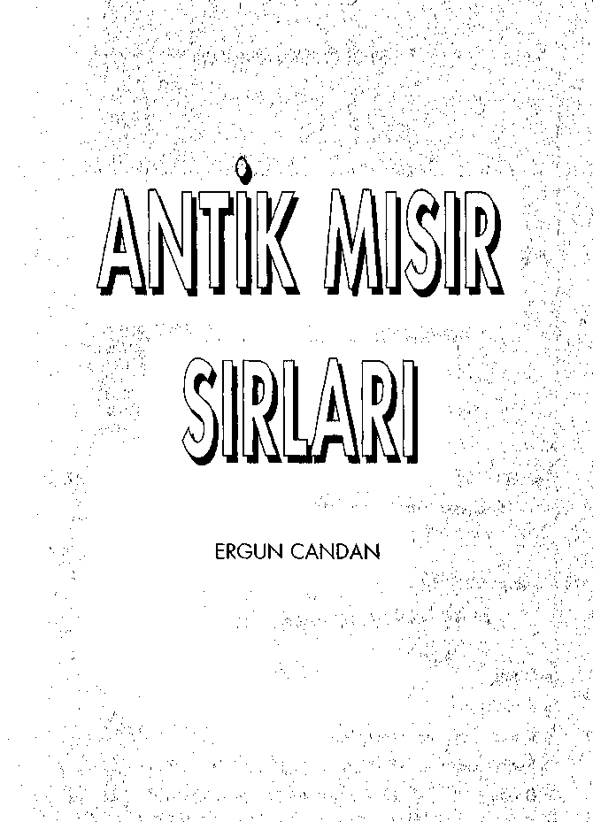
SİNİR ÖTESİ YAYINLARI
Saklı Kütüphane
www.e-kitap.us
SINIR ÖTESİ YAYINLARI
ANTİK MISIR SIRLARI
ERGUN CANDAN
© Bu kitabın t üm yayın hakları SINIR ÖTESİ YAYINLARI'na aittir.
SINIR ÖTESİ YAYINLARI
REKLAM VE PRODÜKSİYON HİZ,
SAN.TİC.LTD.Tİ
Alemdar Mah. Çatalçeşme Sk. No: 23/1 D: 4
Cağaloğlu/İSTANBUL
Tel: O (212) 513 68 13-511 81 80 Faks: 0(212)513 68 13
Yazışma Adresi; P.K. 41 80691 Beşiktaş - İSTANBUL
http: www.sinirotesi.com
e-mail: info@sinirotesi.com
ISBN: 975-8312-24-3
• Dizgi : SINIR ÖTESİ YAYINLARI
» Redaksiyon : Yasemin CANDAN
• Kapak Tasarım : Erkan ERASLAN
* Renk Ayrımı : EKSEN GRAFİK O (212) 217 08 40
* Baskı : KİTAP MATBAACILIK O (212) 567 48 84
İlk Baskı 9.000 Adet Basılmıştır
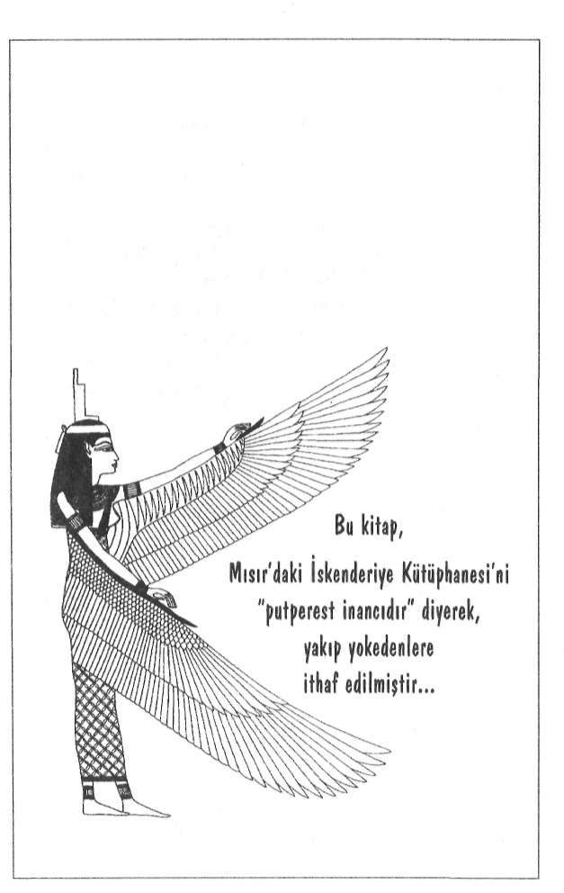
Saklı Kütüphane
www.e-kitap.us
E R G U N C A N D A N ' I N
YAYINLANMIŞ DİĞER
KİTAPLARI
GİZLİ SIRLAR ÖĞRETİSİ
YAŞANMIŞ ESRARENGİZ OLAYLAR
SON ÜÇ PEYGAMBER
RUHSAL GÜÇLERİ GELİŞTİRME TEKNİKLERİ
KIYAMET ALAMETLERİ
TÜRKLER'İN KÜLTÜR KÖKENLERİ
Saklı Kütüphane
www.e-kitap.us
İÇİNDEKİLER
Sunuş 13
Ezoterik Zincirin Önemli Bir Halkası 13
Aniik Bilgelik 14
Sırlar Dünyası'na Yolculuk 17
1. BÖLÜM
MISIR'IN BİLİNMEYEN GEÇMİŞİ 1 9
Ttıfan Öncesine Dayanan Bir Uygarlık 21
Günümüzden lO.OOO'lerce Yıl Önce 21
Tufan'da Neler Olmuştu? 23
Dünya'nın Klasik Kronolojik Tarihi 23
Tufan Sonrası Yaşanan Gerileme 25
Gözden Kaçan Önemli Bir Unsur: Ezoterik Gelenek 28
Tufan'a Doğru ve Sonrasında Mısır'da Yaşananlar 30
Güneş İki Defa Battığı Yerden Doğdu 30
Atlantis'teki Osiris Öğretisi 31
Mu'dan Yukarı Mısır'a 33
Osiris Öğretisi'nin Mısır'a Gelişi 35
Aşağı ve Yukarı Mısır Birleşiyor 40
Dini Eğitim Sistemi'ne Geçiş 40
Tufan Öncesi'ne Ait Kültürün izleri Yokediliyor 44
İslâm Orduları Mısır'da 45
Günümüzdeki Mısır 49
Yıkımdan Kurtarılabilen Belgeler 51
Tufan Öncesi'ne Ait İzler 55
Manyetik Koruma Kalkanı 57
Gizlenen Sırlar Bir Gün Açılacaktır 58
2000'li Yılların İlk Çeyreği 59
Saklı Kütüphane
www.e-kitap.us
2. BOLUM
ANTİK MISIR MİMARİSİ
61
Büyük Piramit (Keops)
62
Keops'un Yapılış Tarihi
65
Piramidin İçini Keşfetmek İçin Yapılan İlk Araştırmalar 70
İlk Bilimadamı 1638'de Piramide Adım Attı
73
Piramidin Sırrı Çözülemiyor
75
Kral Odası'nın Ayrıntıları Ortaya Çıkıyor
75
Uzaylılar Değil ama Bizim Uygarlığımız da Değil
77
Piramitleri Yapan Teknoloji
79
Mucizevi Taşlar ve Asalar
81
Musa Peygamber'in Sihirli Asası
81
Unutulan Gizli Bilgiler
86
"Yada Taşı"nııı Sihirli Gücü
89
Ezoterizm'de Dünden Bugüne Taş Kültü
95
TılsımlıTaşlar'dan Sihirli Asalar'a
97
Sihirli Asalar Günümüze Kadar Gelememiştir
99
Keops'un Dünya Üzerindeki Yeri
102
Büyük Piramid'in Mimarisinde Gizlenen Mesajlar
103
Gize'deki Keops Şifreli Geomelri'nin Merkezi mi?
106
Piramit Şeklinin Ezotcrik Anlamı
110
Kozmik Mabet - Kutsal Mimari
112
Yeryüzü ve Gökyüzü'nün Evliliği
114
İsminin İçindeki Gizli Anlam
115
Firavun Keops'un İsmi Büyük Piramid'e Atfedildi
118
Piramitlerin Enerjisi
119
Gizli Yeraltı Labirentleri
122
Herodot'un Tarihi Kayıtları da Aynı Şeyi Söylüyor 123
Yılanoğulları Üçgen Biçimli Faşların Altında
124
Sfenks'in Sırrı
Saklı Kütüphane
www.e-kitap.us
Tufan Öncesi'nin Şahidi 126
Astrolojik Bir İşaret Olarak Aslan 130
Aslanlı Yol 134
3. BÖLÜM
M.Ö. 12.000 - 10.000
TUFAN SONRASI VE DEMİR ÇAĞI'NA GİRİŞ 135
Tufan Yaklaşıyor 136
Dünya'nın Dengeleri Bozuluyor 137
Farklı İki Uygarlık Ortaya Çıkıyor; Mayalar ve Aztekler 139
Belial'in Oğulları Şambalayı kuruyor 141
Demir Çağı İçin Şambala'ya İhliyaç Vaıdı 142
Şambala ile Agarta'nın Ortak Yönü 146
Şambala ve Şeytan Plânı 147
4. BÖLÜM
MİSİR İNİSİYASYONU 151
Sırlar Öğretisi'ne Giriş 153
Son Akşam 156
Mabede İlk Adım 157
Bir Haftalık Bekleme Süresi 160
Zorlukların Bittiği Zannedildiği Anda 173
Kapı Kapanıyor 163
Mabetteki İlk Sınav Sona Eriyor 165
Sırlarla İlk Karşılaşma 166
Sayılar Bilimi 169
Ateş ve Su Sınavları'ndan Geçiş 17ü
İsis Mabedi'nde İnisiyasyon'a Başlangıç 176
İnisiyasyonda Çıraklık Dönemi Başlıyor 177
Saklı Kütüphane
www.e-kitap.us
Ruhsal Arınmadan Önce Zihinsel ve Fiziksel Arınma 177
Fazlalıkların Terki 180
İç Aydınlanma Anları 182
22 Sının Gizemi 183
Mabedin Aurası TümBenliğni Kaplıyor 186
Osiris Rahipliğine Doğru 190
Ölüm Deneyimi ve Ruhsal İrtibat 191
Thot'un Kitabı'ndaki Sırlar Bilgisi 195
Thot'un Kitabı'na Göre İlâhi Oluşum 198
Ruh Göğün Evladıdır 20i
Cehennem Sembolü ve Aslral Tortular'ın Yakılması 205
Madde Girdabından Kurtuluş 208
Osiris Mabcdi'nde Saklanan Thot'un Sırları 211
Sırlar Mabedi'nden Ayrılış 217
Mutlak Sessizlik Yemini 218
MISIR KOZMOGONİSİ 223
Neter- Khcrt 223
Tanrısal Evren 224
Neter - Khert'in Katları 226
Mitolojik Tanrılar 228
Tanrılar (îlhahi Varlıklar) Birliği 228
Ezoterik Sırlar Sembollerde Gizli 231
İnsanın Fiziksel ve Ruhsal Unsurları 255
İçsel Kıyamet - İçsel Uyanış 257
6. BÖLÜM
MISIRIN ÖLÜLER KİTABI 263
Saklı Kütüphane
www.e-kitap.us
Günümüzdeki Ölüler Kitabı 264
Metinler Sembolik Bir Usluba Sahiptir 265
Mısır Ezoterik Kültürü, Mısırlı Gibi Düşünmeden Çözülemez 266
Sırların Birgün Açılacağı Biliniyordu 267
Reu Pert Em Hru 268
Ölüler Kıtabı'ndaki Ölüler 269
Ölüm ve Maati Salonu 286
Maati Salonu'ndan Tuat'a Geçiş 291
Kalbin Tartılması 299
Ölüye Rehberlik Edilmesi 308
Öte Alem'in Merhalelerinden Geçiş 314
Ölünün Ağzı'nm Açılması ve Adının Hatırlatılması 317
Ölünün Yıldızlar Arası Yolculuk Yapması 321
Tçatça Reisleri 322
Ruh Beden İlişkisi ve İnsanın Tanımı 327
Khu'yu Mükemmelleştirmenin Kitabı 329
Gökyüzü'ndeki Kutsallığın Merkezi 332
Mısır'm Majik Uygulamaları 340
Yüksek Büyüye Giriş 341
Muskalar 346
Majik Yöntemleri Uygulama Yasaları 349
İsmin Majik Gücü 356
Sözün Gücüi, Sihirli Sözler - Dualar 357
Mısır Mumyaları 360
Firavunların Laneti Değil, Manyetik Etkiler 362
Simya 364
Atlantis 367
7. BÖLÜM
MISIR İNİSİYELERİ 371
Fisagor Öncesi Yunanistan - Orfe Dönemi 372
Saklı Kütüphane
www.e-kitap.us
Kendini Bil
374
Deif Mabedi'nde İnisiyasyon
376
Tanrısal Düzeni Görmek
382
Diyonizos Bayramı
Tampe Vadisi'nde Yaşananlar
Şifrelendirilen "Gizli Kod"
388
İnisiyatik Sırların Açıklanması
390
Mabedin Gizli Yeraltı Odaları
393
Orfe'nin Ölümü ve Sırlar Öğretisi'ne Büyük Darbe
394
Fisagor Dönemi
399
Fisagor'un Doğumuyla İlgili Bir Kehanet
400
Mısır'dan Babil'e Zorunlu Seyahat
402
Fisagor'un İnisiyatik Öğretisi
404
Yeni Bir Okul ve Yeni Bir Yönetim Modeli
413
Fisagoryen Etki
416
Eflatun Dönemi
419
Narsis Mitosu
421
Eflatun'un Felsefesi
424
Elözis Mabedi
426
Eflatun'un Gizli İnisiyasyonu: Elözis Sırlan
427
8. BOLÜM
SON SÖZ
433
Aydmlık ve Karanlık Güçler
433
Varılacak Son Nokta: Kıyam Etmektir
435
Uyanış Ama Ne Zaman?
436
Dipnot Açıklamaları
439
Kaynakça
471
Saklı Kütüphane
www.e-kitap.us
SUNUŞ
Yeni bir kitabımla daha, sizlerle bir kez daha buluşma imkâmnı elde etmiş bulunuyorum.
Bu kitabı uzunca bir süredir bekleyen okuyucularımın olduğunu biliyorum... Umarım beklediğinize değmiştir... Elimden geldiğince bunun için uğraştım... 25 yıla yakın bir süredir bir araya getirdiğim notlarımı, en son veriler ışığında derleyip bir kitap hâline getirmek bile iki yıldan fazla bir süremi aldı.
Tabii bu arada, yayınevimizden çıkan diğer kitapların derle-mesiyle de ilgilenmek zorundaydım.
Neyse... Sonunda, "Antik Mısır Sırlan"rı sizlere ulaştır-
ınanm mutluluğu, tüm zorluklan ve yorucu geçen günleri unutturmuş bulunuyor...
Ezoterik Zincirin Önemli Bir Halkası...
Sizlere Mu Uygarlığı'ndan günümüze kadar gelen "Ezoterik Kültürü", belirli bir sıra ile birbirini takip eden kitaplarla aktarmaya çalışıyorum.
Bu konudaki ilk kitabım "GİZLİ SIRLAR ÖĞRETİSİ ydi Ezoterik Kültür ile ilgili tüm genel kavramları bu kitabımda ele almıştım. Sonra sırasıyla "SON ÜÇ PEYGAMBER", "KIYA-
Saklı Kütüphane
www.e-kitap.us
"ANTİK MISIR SIRLARI"
MET ALAMETLERİ" ve "TÜRKLER'İN KÜLTÜR KÖKENLERİ"
isimli kitaplarım, Sınır Ötesi Yayınları tarafından sizlere ulaştırıldı. Tüm bu kitaplar, Ezoterizm ile ilgili büyük bir yelpazenin parçalarını oluşturmaktaydı.
En son olarak yayınladığımız "ANTİK MISIR SIRLARI" da bu yelpaze içinde önemli bir bölümü oluşturmaktadır.
Konuların birbirleriyle devamlılığı vardır.
"Ezoterili Kültür" ile ilgili tam bir araştırma yapmak isteyen yeni okurlarımıza, yukarıda sözünü ettiğimiz kitaplarımızı ve özellikle de, bu konuların temeli sayılan kavramları ele aldığımız "GİZLİ SIRLAR ÖĞRETİSİ" isimli kitabımızı mutlaka okumalarını öneririm.
Bundan önceki kitabım olan "TÜRKLER'İN KÜLTÜR KÖKENLERİ"nde, Orta Asya'nın enginliklerine doğru bir yolculuğa çıkmıştık... Şimdi benzer bir yolculuğa daha çıkacağız.
Bu seferki rotamız: Osiris Rahipleri'nin gizemli ülkesi Antik Mısır...
Antik Bilgelik
Hakikat tüm eski toplumların mitolojilerinde ve dinlerinin temelinde yer almaktadır. Ancak onu bulup oıtaya çıkartmak hem çok zor, hem de çok kolaydır.
Bu zorluk ya da kolaylığı belirleyen ise "Ezoterik Bilgi-
ler"dir. Bu geçmişte de böyleydi, günümüzde de böyle... Bu püf noktasından haberdar olamayanlar ise, büyük bir panikle nehrin kıyısında, bir aşağı bir yukarı koşuşup dunnakta ancak bir türlü nehrin karşı kıyısına geçmeyi başaramamanın sıkıntısı içinde bocalamaktadır.
Saklı Kütüphane
www.e-kitap.us
"SUNUŞ"
Mayalar'ın günümüzden binlerce yıl önce verdikleri kritik tarihe doğru hızla yaklaşılmakta ve hem fiziksel, hem de ruhsal değişimin sancıları artmaktadır
Önümüzde hayli önemli günler bulunmaktadır... Ezoterik Alfabe'nin getirdiği kolaylıktan yararlanarak, gelecek günlere kendimizi daha kolay hazırlayabiliriz. Sadece gelecek günlere değil, içinde yaşadığımız günlere de ışık tutabilecek bu
''Ezoterik Lisan"ı bir an önce kavramakta büyük yarar vardır.
Çünkü zorluk, "Ezoterik Alfabe"yi bilmeyenler için hâlâ dimdik karşılarında durmaktadır Ve şunu özellikle altını çizerek belirtmek istiyorum ki, Ezoterik Alfabe'ylc konuşmayı ve anlaşmayı başaramadığımız müddetçe, ne antik devirlere ait dinlerin, ne de Semavi Dinler olarak isimlendirilen Ortadoğu'ya inen dinlerin gerçeği anlaşılamaz. Günümüz dini inançlarının temel prensipleri ve dinlerin gerçeği ancak ve ancak Ezoterik Alfabe ile bir anlam kazanabilir.
Bu böyle olmasaydı, sorarım sizlere; o zaman Tasavvufi Çahşmalar ortaya çıkar mıydı? Neden Tasavvuf vardı? Eğer her şey göründüğü gibi idiyse, görünen neden insanlara yetmedi de, görünenin ardındaki görünmeyen Ezoterik Prensiplere ulaşılmaya çalışıldı. Tabii şunu da söylemek gerekir ki, bu ihtiyaç o devirde de bu devirde de, herkese ait bir ihtiyaç değildi. Çünkü görünenle yetinenler, her şeyi görünenden ibaret zannettiği için onlara her şey o kadar basitti ki!...
Evet... Onlar için her şey görünenden ibaretti. Ama her şeyin bu kadar basit olmadığını farkedenler, tarihin her döneminde çıkmış ve o büyük ''Ezoterik Bilgelik Zincirleri"nin halkalarına katılmaya gayret etmişlerdir. Bu zincire katılma gayretleri de tüm inisiyatik çalışmaların temellerini oluşturmuştur.
Saklı Kütüphane
www.e-kitap.us
"ANTİK MISIR SIRLARI"
Cevap Geçmişte mi Gizli?...
Ezoterik Alfabe'nin izleri tarihin çok eski dönemlerine kadar uzanmaktadır, işte bu nedenle eskinin anısını günümüz anlayışıyla ele almaya çalışıyoruz.
Ancak günümüzün değişen fiziksel, ruhsal ve kozmik şartlan gereği artık eski dönemlerde olduğu gibi özel olarak oluşturulan çalışma merkezleri ile gerçekleştirilen eğitim sistemi, yerini bireysel tnisiyasyona devretmiş bulunmaktadır.
Bu nedenle de artık bu tür merkezler bulunmamaktadır. Merkez artık her bir bireyin gönlünde oluşmaya başlamış ve bu merkezlerin sayısı da her geçen gün katlanarak artmaktadır.
Bizim burada sizlere eskiyi hatırlatmaktan maksadımız, geleceği daha kapsamlı olarak yorumlayabilmek içindir. Geçmiş dönemlerdeki inisiyatik çalışmalarda insanlara aktarılan sırları gün ışığına çıkartmak, gelecekte bizlere çok büyük kolaylıklar sağlayacaktır.
Şunu asla unutmayın ki, bu sırlara gelecekte de çok ihtiyacımız olacak. Değişen sadece bu sırların aktarılış şeklidir. Sırlar geçmişte neyse bugün de aynıdır. Gelecekte ortaya çıkacak sırların kökenleri de yine o eski hatıraların arasında saklıdır.
Yani aynen bir zamanlar İsa Peygamber'in dediği şu sözlerde olduğu gibi: Şakirtleri isa'ya dediler;
Sonumuz nasıl olacak söyle bize?
Isa dedi:
Sonu aradığınıza göre
başlangıcın perdesini mi açtınız?
Çünkü başlangıç nerede ise,
Saklı Kütüphane
www.e-kitap.us
son orada olacak.
Mesut o kimsedir ki başlangıçta duracak
ve sonu bilecek
ve ölümü tatmayacak.
Kuşkusuz ki bu sözlerin altında yalan sırrı ortaya koyabilmek için birçok bilgiyi bir araya getirmek gerekir. Biz şu anda bu gizli sözlerin ayrıntılı yorumuna girmeyelim ama şunu da unutmayalım ki, geçmişin ezoterik bilgileri olmaksızın geleceğin ezoterik bilgilerini anlayabilmek oldukça zor olacaktır. Neyse... Kitabmızın giriş kısmnıı daha fazla uzatmak istemiyorum...
"Eskilerin bizim şu an bilmediğimiz bazı sırlara vakıf olduklarını kabul etmek zorundayız." diyen Einstein'ı da burada bir kez daha anarak, ''Antik Mısır Sırları"nın derinliklerine doğru ellerimizi uzatmaya başlayahnı...
Sırlar Dünyası'na Yolculuk...
Bir zamanlar Ezoterik Kültür'ün en önde gelen kalelerinden biri oan Antik Mısır, Dünya Coğrafyası'nm en gizemli köşelerinden biridir. Dünya Tarihi'nin en gizli kalmış sırlan da buradadır.
Burada yaşananlar, sadece Dünya Tarihi'nin değil, Dinler Tarihi'nin de en büyük sırlarını oluşturur...
Bir zamanlar "Sırlar Dünyası"na bu kapıdan girilirdi. Az sonra biz de öyle yapacağız ve Mısır Mabetleri'nin içine girerek, sırlar dünyasının kapısını hep birlikte aralamaya çalışaca
ğız... Ancak bundan önce, Mısır'ın Bilinmeyen Tarihi'ni kısaca ele alacağız...
Saklı Kütüphane
www.e-kitap.us
1
MISIR'IN
BİLİNMEYEN GEÇMİŞİ
Günümüzden 3750 yıl önce de
Mısır'la ilgili bilgilere ulaşılmakta büyük zorluklar çekiliyordu...
Çünkü Mısır'ın geçmişi çok daha ötelere uzanıyordu...
Mısır'ın geçmişi deyince birçoklarımızın aklına hemen Firavunlar devri gelir... Firavunlar arasında en fazla duyulanı ise kuşkusuz ki, Ramses'tir... Özellikle de Klâsik Tarihçiler'in en fazla üzerinde durdukları Mısır'ın geçmiş tarihi, işte bu dönemlerdir... Ancak bu tarihler, Mısır'ın çok yakın dönemleridir. Mısır'ın geçmi.şini sorgulamak istiyorsak, bu tarihlerin çok daha ötelerine uzanmamız gerekir...
Örneğin M.Ö. 1750'lerde yaşayan Kral Nefer-hetop'un dönemi bizim için oldukça eski bir tarihi ifade eder. Ve Klâsik Tarihçiler ancak bu tarihlere kadar geriye giderek, "Mısır Kültürü" ile ilgili bir takım çıkarımlarda bulunmaya çalışmış-
Saklı Kütüphane
www.e-kitap.us
"ANTİK MISIR SIRLARI"
lardır. Ancak bu tarih Mısır'ın geçmişini kapsamaz. Mısır'ın geçmişi, bu tarihlerden çok daha eskilere dayanır. Bunu şöyle bir örnekle daha açık anlatmaya çalışalım: M.Ö. 1750'lerde yaşayan Kral Nefer-hetop Osiris'e tıpa tıp benzeyen bir heykel yaptırmaya karar verdiğinde, katiple-rini araştırma yapmaları için Heliopolis Kütüphanesi'nin eski arşivlerine yollamıştı. Çünkü orijinalliğinden emin olacakları bir Osiris resmi arıyorlardı!... Yani günümüzden yaklaşık 3750 yıl önce...
Yine günümüzden yaklaşık 3150 yıl önce yaşamış IV.
Ramses'in de Mısır'ın kökenleriyle ilgili benzer antik araştırmalar yaptırdığı bilinmektedir.
Evet... O dönemlerde de Mısır'ın geçmişi ve kökeni araştırılıyordu!...
Şunu söylemek istiyorum ki, bizim için hayli eski bir dönemi ifade eden bu tarihler bile, Mısır'ın geçmişi ile karşılaştırıldığında hiç bir şey ifade etmemektedir.
Antik Mısır Uygarlığı dendiğinde karşımıza çıkan tarih; bizleri istesek de, istemesek de çok daha gerilere götürür.
Hem de binlerce değil en az 10-12 bin yıl öncelerine...
Bu nedenle Kral Nefer-hetop kendi döneminde Mısır'ın geçmişi ile ilgili bir bilgiyi araştırırken, yaklaşık 7000 - 9000
yıl öncesiyle ilgili tarihi bilgilere ulaşmaya çalışmaktaydı. Gizemi binlerce yıl öncesine ait Osiris'e ait bir resim bulmaya çalışan Kral Nefer-hetop'dan bugüne gelinceye kadar geçen süre, Mısır'ın geçmişini daha da unutturmuş ve bizi 10.000 yılı aşkın bir zaman süreciyle karşı karşıya bırakmıştır İşte bizim araştırdığımız "Antik Mısır Sırları"mn dayandığı geçmiş böylesine devasa bir süreçle ilgilidir.
Saklı Kütüphane
www.e-kitap.us
"MISIR'IN BİLİNMEYEN GEÇMİŞİ"
T U F A N Ö N C E S İ N E D A Y A N A N
BİR UYGARLIK
Bilgilerinin belirli bir kısmını Mısırlı rahiplerden almış
olan Herodot'a göre, yazılı tarih onun döneminden 11.340 yıl öncesine dayanır. Bu yaklaşık olarak Atlantis'in batışına denk gelen bir tarihtir. Yani Hcrodot'un vermiş olduğu bu tarih. Tufan sonrası bizim uygarlığımızın başlangıç tarihidir...
Bu tarih, Mısır için de çok önemli bir dönüm noktasıdır.
Günümüzden 10.000'lerce yıl önce...
Geçmişte meydana gelen ve hemen hemen tüm kutsal kitaplarda dile getirilen Tufan'ın etkileri, bazı bilimadamlarının iddia ettikleri gibi sadece Mezopotamya ve Ortadoğu ile sınırlı kalmamıştır. Aksine, tüm dünya insanlığının hafızasında silinemeyecek izler bırakmış olan bu büyük felâkeder dizisinden, Dünya üzerinde en az etkilenen bölgelerin başında Ortadoğu gelmiştir.
Bir zamanlar yaşanan ve Dünya'nın birçok bölgesini etkileyen iki büyük doğal afetten söz etmeyen ulus ya da kavim yok gibidir. Dünya üzerinde birbirlerinden çok farklı bölgelerde yaşamış olan tüm eski ulusların mitolojilerinde ve dinlerinde bu trajedik anıya yer verilmiştir.
Yaşanan bu felâketler, dinlerde (özellikle de son üç dinde)
"Tufan" olarak isimlendirilmiştir.
Bu büyük felâkeder zincirinin ilkinde Mu Kıtası diğerinde ise Atlantis Kıtası arkalarında küçük adacıklar bırakmak suretiyle tamamen batmışlardır.
Bu yaşananlarla ilgili olarak Kur'an-ı Kerim'de pekçok Saklı Kütüphane
www.e-kitap.us
"ANTİK MISIR SIRLARI"
ayet vardır:
"Ad, Semud milletleri ile Ress'lileri ve bunların arasında birçok nesilleri de yerle bir ettik. Her birine misaller vermiştik ama dinlemedikleri için hepsini kırdık geçirdik." (Furkan Suresi: 25/38-39)
"Gerçekleşecek olan! Nedir o gerçekleşecek olan gün? Gerçekleşecek olanın ne olduğunu sana ne bildirir? Semud ve Ad milletleri tepelerine inecek bu gerçeği yalanladılar. Bu yüzden Semud milleti zorlu bir sarsıntı ile yok edildi. Ad milleti de bu yüzden önünde durulmaz dondurucu bir rüzgarla yok edildi... Ey insanlar! Su taştığı vakit, siz bir ibret olmak üzere, anlayışlı kulaklar anlasın diye süzülen gemide, sizi Biz taşımışızdır." (Hakka Suresi: 69/1-7,11-12)0)
'''Nuh Tufanı" olarak Kur'an-ı Kerim'de Muhammed Peygamber'e tebliğ edilen (vahyedilen) bu meselenin, bilinmeyen olaylardan olduğu, ayetlerde şu şekilde anlatılmıştır:
"Gemi, dağlar gibi dalgalar içinde onları götürürken..."
"Yere, 'Suyunu çek! Göğe 'Ey gök sen de tut' denildi. Su çekildi, iş de bitti. Gemi Cudi'ye oturdu."
" 'Ey Nuh, sana ve seninle beraber olan topluluklara bizden bir selamet ve bereketle gemiden in. Ama birçok toplulukları da ge-
çindireceğiz, sonra onlara can yakıcı bir azap vereceğiz' denildi. Ey Muhammed, bunlar sana vahyettiğimiz bilinmeyen olaylardır." (Hud Suresi: 11/42,44,48-49) Belli ki, Muhammed Peygamber'in döneminde de Tufan'ın izleri hafızalardan çoktan silinip gitmişti.
Saklı Kütüphane
www.e-kitap.us
"MISIR'IN BİLİNMEYEN GEÇMİŞİ"
Tufan'da Neler Olmuştu?
Tufan'da neler olmuştu? Bu konuyla ilgili "KIYAMET
ALAMETLERİ" isimli kitabımda yeterince ayrıntıya girdiğim için, burada bunları tekrar etmek istemiyorum. Tek bir cümleyle özetlemek gerekirse...
Anlatılanlar iki büyük etkenden bahsetmektedir: Su ve ateş... Tabii bu arada meydana gelen büyük depremleri de ilave etmek gerek...
Yaşanan böylesi büyük felâketlere sebebiyet veren etkenler nelerdi?
Dünya eksenindeki kayma ve kutupların yer değiş-
tirmesiyle birlikte gelen büyük sel baskınları ve ani iklim değişiklikleri Okyanus dibindeki gazlar ve bunun sonucu oluşan
büyük depremler.
Atlantis 'in son dönemlerindeçıkan savaşta majik
tekniklerele birlikle doğa güçlerinin negatif alanlarda kullanımı.
İşte bütün bunlar ve bunlara eklenen bazı diğer kozmik etkenler; dinsel kayıtlarda adma ''Tufan" denilen büyük bir trajedinin dünya üzerinde yaşanmasına neden olmuştu.
Dünya'nın Klasik Kronolojik Tarihi
Bu konuda akılları karıştıran bir çelişkiden söz etmek istiyorum. Bu anlatılanlar günümüz bilimsel buluşları ve eskinin dinsel kayıtlarıyla örtüşse de, Klasik Tarih Bilimi'yle ör-
Saklı Kütüphane
www.e-kitap.us
''ANTİK MISIR SIRLARI"
tüşmeyen noktaları olduğunu hepimiz biliyoruz. Çünkü Klasik Tarih Bilimi'ne göre bilinen insanlık tarihimiz şöyle bir kronolojik sıra takip etmektedir:
Taş Çağı'ndan Demir Çağına
Tam olarak ne zaman başladığı konusunda farklı
tarihler vardlır. Ancak Taş Çağının bitişiyle ilgili Tarihçilerin üzerinde birleştikşerri süre günümiiz-den 9.000 yıl öncesine aittir.
Demir Çağı'nı Bakır Çağ, ve Bronz Çağ izlemiş ve insanlık Demir Çağa ulaşmıştır.
Demir Çağ'ın Mezopotamya'da İM.O. 12. Yüzyıl'da,
Avrupa'da ise M.O. 8. Yüzyıl'da başladığı ileri sürülür.
Ve en önemlisi de, bu zaman dilinderinin öncesinde, son derece ilkel bir insanlık tarihinden bahsedilir.
Maymunla insan karışımı bir insanlık tarif edilir.
Klasik Tarih Bilimcileri'nin kronolojisi içinde, günümüz uygarlığıyla karşılaştırıldığında son derece ileri bir düzeye erişmiş olan Mu ve Atlantis Uygarlıkları yer almaz! ...
İşte en büyük sorunda budur. Birçok tarihçi Atlantis ve onun da öncesindeki Mu Uygarlığı nı efsanevi kıtalar olarak nitelendirmişlerdir.
Böyle olunca da insanlık tarihimizin şu an en ileri nokta bulunduğu ile ilgili genel klasik bir kabul bulunmaktadır. Ancak yukarıdaki Klasik Tarih Bilimi'nin verilerinden de anlaşı-
Saklı Kütüphane
www.e-kitap.us
"MISIR'IN BİLİNMEYEN GEÇMİŞİ"
labileceği gibi, Taş Devri'nin Bitişi günümüzden 9.000 yıl öncesine denk gelmektedir. Klasik Tarih Bilimi'nin bu verilerini bir an için doğru kabul edecek olursak, bizim bugünkü teknolojik seviyemize gelebilmek için Taş Devri'nin bitişinden bugüne kadar yaklaşık 9.000 yıl geçmiş olduğu görülmektedir.
9.000 yıllık bu süre içinde, atomik güçleri kullanabilecek ve uzaya açılabilecek aşamayla geldiğimiz düşünülecek olursa; günümüzden en az 70 bin yıl önce yaşamış olan bir uygarlığın bilim ve teknoloji alanlarında hangi boyutlara ulaşmış
olabileceklerini tasavvur bile edemeyeceğimiz ortada değil midir?!...
Dolayısıyla Tufan öncesi Mu ve Atlantis Uygarlıklan'nın bizlerden çok daha ileri düzeyde bir uygarlık olduklarını, bu basit mantık yürütmesinden bile çıkartabilmek mümkündür.
Ama kuşkusuz ki, bunun için önce Atlantis ve Mu Uygarlıkları hakkında bilgi sahibi olmak gerekir.
Tufan sonrası yaşanan gerilme...
Az önce Mezopotamya ve Orta Doğu'nun yaşanan büyük doğal afetlerden daha az etkilendiğinden bahsetmiştik. Bu arada Akdeniz ve Karadeniz'i de daha az etkilenen bölgeler arasında sayabiliriz. Her ne kadar Tevrat ve Kur'an'da anlatılan "Tufan" bu bölgelerdeki yaşananları anlatsa da, yine de bir Atlantik Okyanusu ve Pasifik Okyanusu'nda meydana gelenlerle kıyaslanamayacak kadar daha küçük boyutta olmuştur.
Akdeniz, Karadeniz ve Kızıldeniz gibi nispeten kapalı bir havza içinde yer alan denizlere kıyısı olan yerler. Kutuplar'daki açısal değişimin sonucu ortaya çıkan büyük su bas-kmlarından daha az etkilenmiştir. Nitekim Tevrat ve Saklı Kütüphane
www.e-kitap.us
"ANTİK MISIR SIRLARI"
Kur'an'da bahsedilen Nuh Tufanı'nda, kimi insanlar basit tahtadan teknelere binerek dahi, bu büyük felâketi atlatabilmişlerdir.
Bu büyük doğal afetlerde bilindiği gibi önce Pasifik Okyanusu'ndaki Mu Kıtası daha sonra da Atlantik Okyanusu'ndaki Adantis Kıtası parçalanarak hemen hemen tamamen sulara gömülmüşler, diğer kıtalarda ise kısmi parçalanmalar ve büyük su baskınları meydana gelmiştir.
Marmara Denizi ile Karadenizi birleştiren İstanbul Bo
ğazı bu dönemde açılmış ve iki denizi büyük bir selle birlikte birleştirmiştir. (Bu konuyla ilgili yapılan bir bilimsel araştırmanın sonuçlan geçtiğimiz yıl Discovery kanalında yayınlanmıştır.) Meydana gelen tüm bu büyük doğal afetlerin sonucunda Dünya üzerinde yokolmaktan kurtulabilen tüm uygarlıklarda büyük bir gerileme kaçınılmaz olmuştur. Dünya'nın büyük bir bölümünde kelimenin tam anlamıyla, korkunç bir gerileme yaşanmıştır. Kurtulabilenler boş alanlara yerleşmişler ve her türlü teknolojik imkândan bir anda yoksun kalıvermişlcrdir.
İşte günümüz Klasik Tarih Bilimi'nin bundan 9.000 yıl önce yaşadığını iddia ettiği Taş Devri'nin altında yatan gerçek bu gerilemedir. (2)
Yukarıdaki kronolojik tarihlendirmedeki bir başka ayrıntıya daha dikkatlerinizi çekmek istiyorum: Klasik Tarih Bilimi'nce; Demir Çağ, Mezopotamya'da M.Ö. 12. Yüzyıl'da, Avrupa'da ise M.Ö. 8. Yüzyıl'da başladı
ğının söylenmesi de, Mezopotamya ve Ortadoğu'nun yaşanan felâketlerden daha az etkilenilmiş olduğu gerçeğini gözler önüne serer. Çünkü Mezopotamya'da Demir Çağ Avrupa'ya oranla daha çabuk başlamıştır. Klasik Tarihi Kronoloji'ye göre Mezopotamya Uygarlıkları o dönemde Avrupa'daki Saklı Kütüphane
www.e-kitap.us
"MISIR'IN BİLİNMEYEN GEÇMİŞİ"
Uygarlıklar'dan 400 yıl önde bulunmaktaydı...
Uygarlıklar'ın Tufan sonrasında yaşadığı gerileme teknoloji ve bilim alanında görüldüğü gibi aynı zamanda ruhsal alanda da kendisini göstermiş ve aynen Güneş'ten uzakta kalan gezegenlerin soğuması gibi, bir zamanlar Mu ve Atlantis'de yaşayan kozmik kökenli inisiyatik bilgiler de, benzer bir gerilemenin içine girmiş ve giderek ilk günkü değerlerinden uzaklaşmışlardır.
Bu yozlaşmayı nispeten yavaşlatabilen Orta Asya, Mısır ve Mezopotamya yörelerindeki bazı merkezler ise, bugünkü uygarlıkların beşiği olmuştur. Bu merkezlerde yeralan ö/ellikle üç toplum bunun başını çekmiştir: 1- Orta Asya'da Şamanlar ve Tibetliler.
2- Mezopotamya'da Sümerliler.
3- Kuzey-Doğu Afrika'da: Mısırlılar...
Gerçekten de Kültür ve Uygarlık Tarihi içinde bu üç büyük merkezin fonksiyonu ve katkısı son derece önemlidir.
Burada Mayalar'ı neden saymadığımı merak eden okurlarımızı duyar gibi oluyorum... Kuşkusuz ki, Orta Amerika Kıtası'ndaki Mayalar da çok önemli bir merkezdi ancak bu toplumla bizim uygarlığımızın çok fazla bir irtibatı olamamıştır.
Günümüz ABD halklarının atalarını oluşturan İngiliz ve İspanyol koloniciler Mayalar'ın torunları Kızılderililer'le bir irtibat sağlamışlardı ama bu irtibat o kültürü tanımaya çalışmaktan ziyade, korkunç bir katliama yönelik bir uygulamaya dönüştüğü için ne yazık ki, o kültürden hiç bir şey elde edememişlerdir. Etselerdi şu anda dünyadaki fonksiyonları herhalde çok daha farkh olurdu...
Saklı Kütüphane
www.e-kitap.us
"ANTİK MISIR SIRLARI*
Neyse, birgün gelir her şey yerli yerine oturur elbet!...
Konumuzdan uzaklaşmamak için bu konuda başka şeyler yazmaktan kendimi uzak tutmaya çalışıyorum...
Konumuza geri dönelim.
Gözden kaçan önemli bir unsur: Ezoterik Gelenek Mısır Uygarlıgrnı araştırma konusu yapan başlı başına bir bilim dalı vardır ve bu bilimle uğraşanlara ''Egyptolog" denir.
Ancak ne var ki, Egyptologlar'ın bizlere aktardıkları Mısırla ilgili bulgular son derece sıradan bilgilerden ibarettir. Onlar bizlere Firavunlar döneminin tarihini ve Mısır yapılarının belirli özelliklerini anlatmaktan öte pek fazla bilgi vermezler Onlar için piramitlerin nasıl yapıldıkları bile bir muammadır-. Peki ama bu muammaları kim çözecek? Bunlara cevap ne zaman verilecek?
Bu çelişkiyi ilk kez kamuoyuna duyuran araştırmacı, Atatarük'ün de kitaplarını getirterek tercüme ettirdiği James Churchward olmuştur.
James Churchward yaymladığı ilk kitabında bu konuyla ilgili şu satırları kaleme almıştır:
Egyptologiar Mısır'la ilgili birçok konuda oluşturdukları teoriyle gerçekten önemli ölçüde sapmışlardır. Bunun nedeniyse ne eskilerin sembolizmini ne de bu sembolik yazıtların ezoterik anlamlarını anlayamamış olmalandır. Bunun için onları suçlayamayız. Çünkü bu konuda bir ipucu bulunmadığı gibi, bunların öğrenilebileceği bir okul da yoktur. Bu sırtar en azından yüzlerce yıldır sadece bir avuç yaşlı Doğulu Bilge tarafından bilinmek-
Saklı Kütüphane
www.e-kitap.us
"MISIR'IN BİLİNMEYEN GEÇMİŞİ"
tedir. Tüm bu yaşlı bilgeler yaşamlarını kendi mabetlerinde ge
çirmişler ve dış dünya ile nadiren irtibatları olmuştur.
Bu çok ender de olsa gerçekleştiğinde ise, onların aktardığı bilgiler, eldeki mevcut teorilerle o kadar uyuşmamıştır ki, bu anlatılanlar anlamsız şeyler olarak değerlendirilmiştir. (3') James Churchward bu satırları kaleme aklığında 1900'lü yılların henüz daha ilk çeyreğindeydik. O günlerden bu günlere gelinceye kadar aradan bir hayli zaman geçmiş olmasına rağmen, Klasik Tarih Bilimi'nin etkisi altındaki Egyptologlar için değişen çok fazla bir şey olmamıştır-. Onların büyük bir bölümü hâlâ okullarda kendilerine anlatılan klasik bilgileri tekrar edip durmaktadır.
Mısır bilmecesinin çözümü için James Churchward'ın vaktiyle söylemiş okhıgu gibi sadece tek bir yol vardır:
"Ezotecrik Bilgilerle meseleyi ele almak..."
Ezoterik Bilgiler ışığında meseleye yaklaşmanın haricinde Mısır Kültürü'nün derinliklerine inebilmenin başka hiç bir yolu yoktur. Bu önemli unsur hesaba katılmadan yapılacak hangi araştırına olursa olsun, bizi sonuca ulaştırmayacak ve Mısır'da bir zamanlar neler yaşandığını bizlere gösteremeyecektir.
Artık hadi gelin, binlerce yıl öncesine doğru yeniden yola çıkalım ve o günlerin anısını ''Dünya'mn Ezoterik Tarih i " n i göz önünde bulundurarak yeniden canlandıralım... Bakalım geçmişimizi ve geleceğimizi ilgilendiren nelerle karşı
Saklı Kütüphane
www.e-kitap.us
"ANTİK MISIR SIRLARI"
TUFAN'A DOĞRU VE S O N R A S I N D A
MISIR'DA YAŞANANLAR
Tufan'dan sonra çok büyük bir gerileme yaşayan insanoğlu, her şeye yeniden başlamak zorunda kaldığı için, ilkel kabileler dönemine geri döndü. Bu tam anlamıyla bir geri dönüştü... İnsanlığın aşağıya iniş sürecindeki çok önemli bir geri adım böylelikle atılmış oluyordu...
İnsanlık hem fiziksel hem de ruhsal anlamda büyük bir gerilemenin içine girmişti. Ancak bir zamanlar yaşanan bu trajedi ile ilgili anılar eski lo|)lumiarın geleneklerinde günümüze kadar gelebildi. Bunlar arasında Mısır Geleneğini en önde gelenler arasında sayabiliriz.
Güneş iki defa battığı yerden doğdu...
Tarihin babası olarak anılan ünlü tarihçi Heredot, Mısır'a yaptığı bir gezi sırasında bir rahipten duyduklarını kitabında şöyle anlatır:
Bir Mısırlı Rahip bana: "Bilmiş ol ki, atalarımız zamaınnda Güneş iki defa battığı yerden doğdu, sonra aynı olay tekrar tersine meydana geldi" dedi
Kur'an-ı Kerim'deki bir ayet ise, sanki Mısırlı rahiplerle söz birliği etmişçesine şöyle der:
O, iki Doğu'nun Rabbi'dir, iki Batı'nın Rabbi'dir."
(Rahman Suresi: 55/17)
Günümüzde yapılan jeolojik ve kilimatolojik araştırma-
Saklı Kütüphane
www.e-kitap.us
"MISIR'IN BILINMEYEN GEÇMİŞİ"
lar, Herodot'un aktardığı Mısırlı rahibin sözlerini doğrulamış
ın Çünkü eldeki bilimsel veriler kutupların birden fazla yer değiştirmiş olduğunu kesin olarak göstermektedir. En son kutupsal değişimin Atlantis'in batışına denk gelen tarihlerde meydana geldiği tahmin edilmektedir (4)
Atlantis'teki Osiris Öğretisi
Bu büyük felâketler zinciri henüz daha başlamadan önce Mu ve Atlantisli rahipler yaşanacaklardan haberdardılar ve bu konuda halklarını çok önceden uyarmışlardı.
Beklenen Tufan'dan en az etkilenecek olan bölgeler tespit edildikten sonra buralara yoğun göçler düzenlemeye başlamışlardı. İşte bu bölgelerden biri de Mısır topraklarıydı.
Mısır önce Mu'dan sonra da Atlantis'ten yoğun göçler almıştı. Tarihçilerin bir zamanlar bir türlü içinden çıkamadıkla-rı; "Bir anda böylesine ileri düzeyli bir uygarlık Afrika'nın Kuzeyi'nde nasıl oluşmııştıır" sorusunun cevabı işte bu göçlerde yatmaktaydı.
Tarihin çok eski dönemlerinden başlayan, Atlantis'le Mu arasında sürekli bir irtibatın olduğu bilinmektedir. Bu irtibat Mu Bilgeliği'nin Atlantis'e taşınmasında çok önemli bir rol görmüştür.
Orta Asya'nın muhtelif yörelerinde buluanan çok eski bir kültüre ait bilgiler veren taştabletlerden elde edilen ezoterık bilgilere göre, Mu'ya indirilen kozmik öğretinin kaynağı "Si-
rius Kültürü" idi.
Bu tabletlerin içerikleriylc ilgili ilk bilgiler ünlü araştırmacı James Churchward tarafından dünyaya duyurulmuştur, James Churchward kendi anlayışı ile bu bilgileri yorumlamış
Saklı Kütüphane
www.e-kitap.us
"ANTİK MISIR SIRLARI"
ve bu öğreti sistemine dünyanın ilk Tek Tanrılı dini adını vermişti. Onun Tek Tanrılı din olarak yorumladığı sistem aslında bir din değil, tam anlamıyla kozmik kökenli bir öğretiydi.
Bu öğreti ilk kez Mu'da yaşam bulmuş ve oradan da Atlantis'e taşınmıştır. Ancak zamanla Atlantis'te bu öğreti dejenere olmuştu. İşte bundan sonrasını tabletler şöyle anlatır.
Özetle aktarıyorum:
Tabletler konumuzla çok yakından ilgili olan bir isimden bahsetmektedirler.
Bu isim Osiris'tir...
Günümüzden 18-20 bin yıl önce yaşamış olan bu kişiden Atlanlisli bir bilge olarak söz edilmekledir. O dönemlerde Atlantis'te başlayan dejenerasyon hat safhaya ulaşmıştı, Osiris bilgisini derinleştirmek üzere doğduğu ülke Atlantis'i terkedip Mu Kıtası'na gitti. Oradaki Naakal Okullan'nda
"MU Kozmik Öğretisi" ile ilgili inisiyatik dersler aldı. Daha sonra Atlantis'e geri döndü. Tüm yaşamını Atlantis halkını aydınlatmaya ve Mu Kültürü'nü anlatmaya adıyan Osiris, birtakım çıkarları uğruna Kozmik Öğretiyi yozlaştırmış Atlantis rahip sınıfının etkisi altında oluşan yanlış anlayışları ve uydurma kavramları düzeltmeye çalıştı.
Halktan çok büyük destek gördü. Halk kısa süre içinde ona büyük bir sevgi ve saygıyla bağlandı. Sonunda Atlantis'in ruhani lideri oldu. Kendisini Atlantis Kralı Uranos'un yerine getirmek istediler. Fakat o bunu kabul etmedi.
Ölümünden sonra kendisine bağlı inisiyelerce adının ya
şatılması için, Atlantis'te yaymaya çalıştığı Mu kökenli Kozmik Öğreti'ye "Osiris Dini" adı verildi. Ve binlerce yıl bu öğreti Atlantis'e hakim oldu. '
Saklı Kütüphane
www.e-kitap.us
"MISIR'IN BİLİNMEYEN GEÇMİŞİ"
Mu'dan Yukarı Mısır'a
Atlantis'te bunlar yaşanırken, Mu Kıtası'ndan çevre kıtalara göçler de başlamıştı. Mu'nun önde gelen ırklarından biri olan Nagalar önee Burma'ya oradan da Hindistan'a, sonrasında ise iki kola ayrılarak bir kol Babile diğer bir kol ise Kızıldeniz üzerinden "Yukarı Mısır" tabir edilen Afrikan'ın Kuzey Doğu'sundaki Kızıldeniz kıyılarına yerleştiler. Eski tarihi kayıtlarda bu bölge ''Maiu" olarak isimlendirilmişti. Yukarı Mısır'daki Nübye'de yer alan Maiu, bu günkü Suakin kentinin yakınlarında, Kızıldeniz kıyısındadır.
Bu bölgelerde yerleşim birimlerinin kurulduğunu, hem Mısır kaynaklan hem de Hint kaynaklan teyid etmektedir.
Bazı Yunan tarihçilerinin ve filozoflarının "Mısırlılar Hindistan'dan gelmiş kolonicilerdir" demelerinin altında yalan gerçek işte budur.
Kitaplarını Hindistan'daki çeşitli gizli mabetlerdeki kayıtlardan yararlanarak kaleme aldığı bilinen dünyaca ünlü Hint tarihçisi Valmiki de, bu konuda son derece açık anlatımlarla bulunmuştur. Örneğin Rişi Mabedi'nin gizli kayıtlann-dan aldığı bir alıntıda şöyle der:
"Hindistan'dan gelen Mayalar (5'') Mısır'da bir koloni kurdular ve buraya Maiu adını verdiler."
Ramayana isimli ünlü eserinde ise daha ayrıntılı bir bilgi verir:
"Naakaller önce Hindistan'ın Dekkan bölgesinde yerleştiler.
Sonra da dinlerini ve bilgilerini Babil ve Mısır kolonilerine aktardılar."
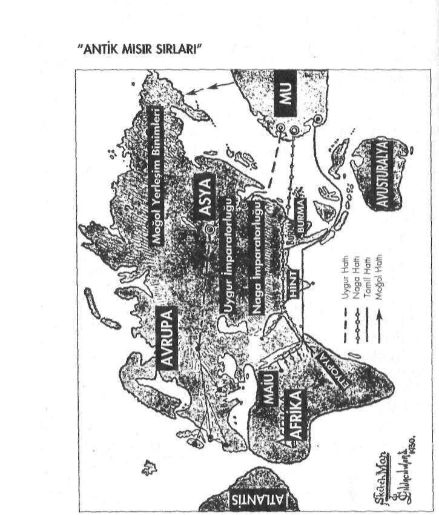
Saklı Kütüphane
www.e-kitap.us
Tibet civarındaki bir mabette bulunan eski bir haritadan uyarlanarak hazırlanmıştır.
Bu harita ilk kez James Churchward tarohndan dünya kamuoyuna duyurulmuştur.
Saklı Kütüphane
www.e-kitap.us
"MISIR'IN BİLİNMEYEN GEÇMİŞİ"
Kısaca özetlemek gerekirse:
Mısır topraklarına ilk ayak basanlar Mu kolonilerinin Naga koluydu. Nagalar Mu'da Naakaller olarak isimlendirilmekteydi. Bu nedenle eski tarihi kayıtlarda bazen Nagalar bazen ise Naakeller olarak bu toplum isimlendirilmiştir.
Mu Kıtası batmadan önce gerçekleştirilen bu göç Mısırlılar'm atalarını oluşturdu. Ancak Mısır, hem bu dönemde hem de Atlantis'in batışına yakın dönemlerde yoğun olarak Atlantis'ten de göç almıştır. Bu nedenle Mısır halkının ataları dedi
ğimiz zaman hem Mulular'ı hem de Atlantisliler'i bir arada ele almak gerekir
Mısır toplumu o topraklarda sıfırdan başlayarak gelişim gösteren bir uygarlık değil, yapılan göçlerle gelişmiş bir kültürün buraya taşınmasıyla ortaya çıkmış bir ülkedir Hatta bir değil birbirine son derece benzeyen iki kültürün: Mu ve Atlantis Kültürü'nün...
Evet... Gelelim Atlantis'ten Mısır'a yapılan göçlere...
OSİRİS ÖĞRETİSİ'NİN MISIR'A GELİŞİ
Atlantis'ten yapılan göçler, bölgenin "Aşağı Mısır" olarak tabir edilen kesimine gerçekleştirildi. İlk büyük yerleşim birimi ve ilk büyük mabet Nil Deltası'ndaki Sais'te kuruldu.
Daha önce Osiris Öğretisi'nin Atlantis'te nasıl bir geli
şim gösterdiğini görmüştük. Atlantis'ten Mısır'a gerçekleştirilen göçlerle, sözünü etmiş olduğumuz Osiris Öğretisi de Mısır'a taşındı.
Osiris Öğretisi'nin Mısır'a getirilişi, Atlantisli bir bilge olan Thot tarafından M.Ö. 14 bin yıllarında gerçekleştirilmiştir Yani Atlantis'in batışından yaklaşık 4.000 yıl önce... (6)
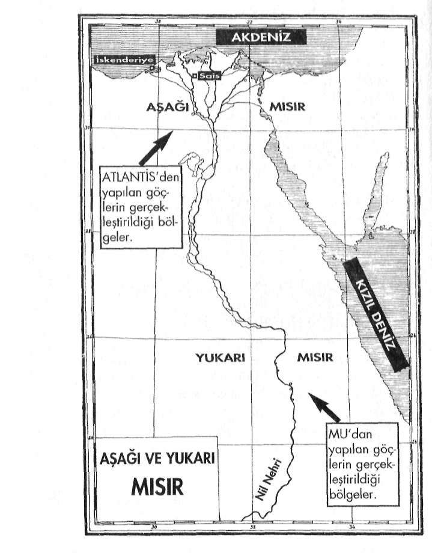
Saklı Kütüphane
www.e-kitap.us
"ANTİK MISIR SIRLARI"
Saklı Kütüphane
www.e-kitap.us
"MISIR'IN BİLİNMEYEN GEÇMİŞİ"
Thot zamanından Menes zamanına kadar yani M Ö .
14.000'den M.Ö. 5000'e kadar geçen tam 9000 yıl boyunca hu öğretinin gizli mabetlerde korunması Horus unvanı ile anılan rahiplerce sağlandı.
Bu konuda en açık yazılı kaynaklardan biri Herodot'a ait-Iir. Herodot şöyle der:
"Horus, Kral Menes tahta geçmeden evvel Mısır'ın Hiyararşik yöneticisiydi."
Benzer bir başka anlatım da Mısırlı rahip ve tarihçi Manetho taralından kaleme alınmıştır:
"Mısır'daki bilgeler yönetimi 10.000 yıl devam eder. Bilgeler, Hi-yeratik hükümdardırlar."
Mısır'ın Ölüler Kitabı'nda ise Horusla ilgili şöyle bir tanımlama yer alır:
"Horus, ilâhi babasının özünden geldi. Mısır'ın Yöneticisi oldu."
Gelenler kültürleriyle birlikte gelmişler ve bir anda Mısır'da büyük bir inisiyatik merkez kurmuşlardı. Ancak mabetlerin derinliklerinde saklanan bu "inisiyatik sırlar" dışarıya hiç bir zaman tam olarak açıklanmadı. Halka "Osiris Yolu"
adı altında son derece kapalı bir şekilde mitolojik hikâyeler tarzında, bilgiler üstü örtülü bir şekilde verilmekteydi.
Buna karşın özel eğitime tabi tutulan son derece kısıtlı sayıdaki kişiye ise, Horus'un Rahipler'i ellerindeki sırları açıklamaktaydılar.
Bundan dolayı Mısır'da "Osiris'in Yolu" ve "Horus'un Saklı Kütüphane
www.e-kitap.us
"ANTİK MISIR SIRLARI"
Yolu" olarak bilinen, biri egzoterik diğeri ise ezoterik içerikli iki ayrı öğreti ortaya çıkmıştı.
Daha sonraları Horus Rahipleri de Osiris Rahipleri olarak anılmaya başlandı. Ancak sırların gizli tutulması konusunda hiç bir şey değişmedi. Ve sırlar asla dışarıya sızdırılmadı.
Günümüze kadar gelebilen taş tabletlerdeki ve diğer yazılı kaynaklardaki anlatılanlar, bu aktardıklarımızı birebir doğrulamaktadır. Dahası bu anlatılanlar, günümüzden birkaç bin yıl önce Mısır'a giden gezgincilerin ve tarihçilerin Mısırlı rahiplerden aldıkları bilgilerle de örtüşmektedir.
İşte birkaç örnek:
Girit'te Schliemann tarafından bulunan bir tablet:
''Mısırlılar, Misar'ın soyundan gelmektedir. Misar Tarih Tanrısı Thot'un çocuğuydu. Thot ise Atlantisli bir rahibin göçmen oğluydu, ilk mabedini Sais'te kurdu ve orada ana vatının bilgeliğini öğretmeye başladı."
İkinci Hanedan, Firavun Sent Dönemi'ne ait bir başka papirüs:
"Firavun Sent, Atlantis'in izlerini araştırmak için, Batı'ya bir araştırma ekibini gönderdi. Mısırlılar 3350 yıl evvel beraberlerinde Anavatanları'nın tüm bilgeliği olduğu halde oradan gelmişlerdi."
Gerçekten de birçok eski kayıtta rahatlıkla görülebileceği gibi. Mısırlılar kendi kökenleri ile ilgili yaptıkları açıklamalarda, ısrarla atalarının çok eski zamanlarda Nil kıyılarına yerleş-
Saklı Kütüphane
www.e-kitap.us
"MISIR'IN BİLİNMEYEN GEÇMİŞİ"
miş yabancılar olduklarını ileri sürmekteydiler.
Bir toplumun kendi ataları için kullandığı "yabancı" tanımlaması son derece düşündürücüdiir. Bu tanımlama tüm açıklığıyla, atalarının bu topraklara sonradan gelmiş ki
ler oldukları anlamına gelir.
Buna benzer bir başka yazılı kayıt da Herodot'a aittir:
"Mısırlılar, Batı ülkelerindeki atalarının, yeryüzündeki en eski insanlar olduklarını söyleyerek övündüler."
Mısır'la yakın irtibat içinde olan ve bir kısmı Mısırlı ra-luplcrce eğitilen bazı Yunan Filozofları da, bu konuda benzer açıklamalarda bulunmuşlardır. Ayrıntıya girmeden sadece iki üınekle yetinmek istiyorum.
Plutark "Solon'un Hayatı" isimli eserinde şunları söyler:
"Solon Mısır'a gittiğinde Sais, Psenofis ve Heliopolis rahiplerinden olan Suçis kendisine 9000 yıldır Mısırlılarla Batı ülkelerinin arasındaki ilişkilerin kesik olduğunu anlattı. Çünkü Atlantis'in depremler, ötedeki bir ülkenin de tufanlar sonucu yıkılması sonrasında çamular, denizi geçit vermez bir hâle sokmuştu."
Orfe ise tek bir cümleyle Mısır'ın kökenini özetleyiver-miştir:
"Mısır, Poseidon'un kızıdır." (7)
Saklı Kütüphane
www.e-kitap.us
"ANTİK MISIR SIRLARI"
Aşağı ve Yukarı Mısır Birleşiyor...
Evet, Mısır'ın geçmişi dendiği zaman, böylelikle karşımıza iki farklı kültürün çıkmış olduğunu görüyoruz.
Belli bir süre sonra bu iki temel kültür Mısır topraklarında birbirleriyle kaynaşıp, Mısır'a özgü tek bir kültürü ortaya çıkartmışlardır.
Kaldı ki zaten Mısır'a gelen bu iki kültür de birbirlerinden kopuk değil, aksine birbirleriyle örtüşen özellikler sergilemekteydi. Bu nedenle iki kültürün Mısır topraklarında kaynaşması hiç de zor olmamıştır.
10.000 yılı aşkın bir süre inisiye rahiplerce son derece adil bir şekilde yönetilen Mısır, daha sonraları Firavunlar tarafından yönetilmeye başlandı. Aradan geçen yüzyıllar eskinin bilgeliğinden çok şey alıp götürmüştü. Bu süre içinde inisiye rahipler tam anlamıyla mabetlerine çekildiler.
Firavunlar döneminin başlangıcında, firavunların uzun yıllar süren inisiyatik bir eğitime tutulmaları söz konusuydu.
Ancak zamanla bu da bozuldu ve üstün körü ve son derece kısıtlı bir eğitimle yetinmeye başladılar. Bunun sonucu olarak firavunlar inisiyatik gelenekten gittikçe uzaklaştılar. İlgilendikleri alan daha çok majik çalışmalarla kısıtlı kaldı.
Kur'an-ı Kerim'de de sözü edilen Musa Peygamber'in firavunlarla olan çatışması işte bu dönemleri anlatır (8) DİNİ EĞİTİM SİSTEMİNE GEÇİŞ
Musa Dönemi hem Mısır için, hem de insanlık tarihi için hayli önemli bir dönüm noktasıydı. İnsanlığın fiziksel ve ruhsal olarak aşamalı aşağıya iniş sürecinde önemli bir noktaya gelinmişti. Artık mitolojik eğitimden, dini eğitim sistemine Saklı Kütüphane
www.e-kitap.us
"MISIR'IN B I L I N M E Y E N GEÇMİŞİ"
geçilecekti. Bu, sırların iyice üstünün örtüleceği anlamnıa gelıyordu. Bunun ilk adımı, Mısır'ın gizli sırlarına inisiye olmuş
Musa tarafından atıldı,
Bunun kararı kuşkusuz ki, sadece Musa tarafından alınmış değildi. Bu, muhtemelen birçok Mısırlı rahipçe alınan ortak karardı. Ve bu, harfiyen uygulandı.
Musa'nın bir Osiris rahibi olduğundan asla söz edilme-den, Musa ilk "Tek Tanrılı Din"m kurucu peygamberi olarak İsrailoğulları arasında vazifesine başladı. Museviliğin temelini teşkil edecek olan "On Emir" bile bizzat Osiris Öğretisinin 42 kuralından alınarak derlenmişti.
Musa Peygamber'in bir Osiris rahibi olduğunun saklı tutulmasında o kadar başarılı olunmuştu ki, bu büyük sır halk tarafından yüzyıllarca anlaşılamadı. Bugün bile bu sırdan haberdar olmayan Museviler vardır.
Musa Peygamber'e ve öğretisine ait daha pekçok sırrın gizli kaldığmdan Kur'an-ı Kerim'de de açıkça sözedilmiştır:
"...De ki: 'Musa'nın insanlara nur ve yol gösterici olarak getirdiği Kitab'ı kim indirdi? Ki siz onu kâğıtlara yazıp bir kısmını gösterip çoğunu gizlersiniz, atalarınızın ve sizin bilmediğiniz size onunla öğretilmiştir.'... (En'âm Suresi: 6/91)
İsrailoğulları'nın anlayamadığı çok şey vardı. İsrailloğul-ları bırakın Musa'nın gizli şahsiyetini, onun ortaya koyduğu opırliyi bile anlayamadılar. Ve sonunda dünya tarihinde ilk kezbir peygamber kendi ulusuna lanet ederek bu dünyadan ayrıldı
Şimdi kısa bir süreliğine, işte o günlere ve özelikle de Musa Peygamber'in bu dünyadan ayrılmadan önceki son sa-atlerine geri dönmek istiyorum:
Saklı Kütüphane
www.e-kitap.us
"ANTİK MISIR SIRLARI"
... Ve bir gün yanına üç müridini alaralk Nebo Tepesi'ne doğru yola çıktı... Yaşamının en önemli bölümleri yollarda geçmişti...
Şimdi ise o, son yolculuğuna hazırlanıyordu... Dağlarda başladı
ğı vazifesi yine dağlardaki bir mağrada noktalanacaktı...
Vazifesinin her anında yanından ayrılmayan Yeşu, O'nu son yolculuğunda da yalnız bırakmamıştı...
Nebo Tepesi'ni ağır ağır çıkarak bir mağaraya vardılar. Ömrünü vererek gerçekleştirdiği eseri acaba kendisinden sonra yaşayabilecek miydi? Bu soruların zihninden gelip geçmesine engel olamıyordu... içini rahatsız eden bir şeyler vardı...
Musa yavaşça oturdu... Üç müridi de hiç ses çıkartmadan çevresinde bir halka oluşturdular, Musa tam ortalarında öylece hareketsiz duruyordu.
Bedenini terk etmek üzere olduğu bir anda, durugörü yeteneği ona bundan sonra neler olacağını göstermeye başladı... Kendisinden sonra yaşanacak olaylar birer birer gözlerinin önünden geçiyordu... Geleceğin korkunç realitesi tüm açıklığıyla gözlerinin önüne serilivermişti: israil'in ihanetlerini, başkaldıran anarşiyi, Tann'nm mabedini kirleten kralların cinayetlerini, kitabının aslından saptırılışını, cahil ve iki yüzlü rahiplerin elinde fikirlerinin nasıl yozlaştırılarak çarpıtıldığını, krallann dinden çıkışını, arı ve saf bilgilerin - kutsal doktrinin nasıl örtbas edeldiğini ve sırlar bilgisine sahip rahiplerin çölde nasıl zulme uğratıldıklarını açık seçik bir şekilde teker teker görüyordu.
Tufan'dan sonra insanlığın içine girmiş olduğu "Demir Çağı"nın tüm özellikleri gözlerinin önüne serilivermişti.
Bundan sonra insanlığı hiç de güzel şeyler beklemiyordu!...
Onun gibi "Kutsal Bilim" in sırlarına inisiye olmuş biri için bu gördükleri hiç de iç açıcı şeyler değildi. "Kutsal Bilim "in nasıl yokolup gitmekte olduğunu görmek; her ne kadar Saklı Kütüphane
www.e-kitap.us
"MISIR'IN B I L I N M E Y E N GEÇMİŞİ"
böyle olması gerektiğini bilse de, yine de onu bir hayli etkilemişti
Son nefesini vermek üzereydi, iyice ağırlaşan kolunu büyük bir güçlükle kaldırdı... Gözlerini hafifçe aralayarak, uzaklardaki sabit bir noktaya dikti ve büyük bir hiddetle ağzından şu sözler döküldü:
-"İsrail Tannsi'na ihanet etti... Onun için göğün dört bir bucağına çil yavrusu gibi dağılsın!..."
Bir peygamber için ne kadar zor bir an... Uğruna bu kadar uğ- !
rastığı halkına beddua ederek bu dünyadan ayrılıyordu... Halkı için son sözü bir beddua olmuştu... (9) (10)
Busözlerden sonra yanındakilere, kendisinden sonra zamanı geldiğinde, Tann'nın, kelâmını ağzına koyacağı yeni bir peygamber yollayacağını söyleyerek, bu dünyadan ayrılmıştır.
Musa Peygamber'in bu son sözlerine sıkışan kehanet gerçekleşmiş ve geleceğini önceden söylemiş olduğu Peygamber dünya sahnesindeki yerini almış ve herkes onu Nasıralı İsa olarak tanımıştır.
Ancak ne var ki, Musa Peygamber'in gördüğü vizyonda olduğu gibi İsa Peygamber'in de başına gelmeyenler kalmamış ve sonunda onu çarmıha germekten bile çekinmemişlerdir.
İsa Peygamber'in bilinen en son sözü ise "Baba onları'
affet.. Ne yaptıklarını bilmiyorlar!..." olmuştur.
Evet... Bilgiden uzaklaşan insanlık artık ne yaptığını bilmez, bir hâle gelmişti. İsa Peygamber'den sonra "Dini Öğreti Sistemi en son halkasını tamamlamak ve dinler devrini Saklı Kütüphane
www.e-kitap.us
"ANTİK MISIR SIRLARI"
kapatmak için gelen Muhammed Peygamberde getirdiği dini, savaşlarla kabul ettirtmek zorunda kalmış ve temsil ettiği asıl değerler ve vahiy yoluyla getirdiği "İslâmiyet'in Ezoteıik Yönü", çok az sayıda kişi tarafından anlaşılabilmiştir. Ölü münden çok kısa bir süre sonra ise "Kıır'danki İslâm" çe
şitli mezheplere ayrılmıştır. Adeta tek bir dinden birden farklı dinler türetilmiştir.
Demir Çağı'nda insanlıktan da zaten bundan farklı davranması beklenemezdi. Kaldı ki, Musa ve İsa Peygamberler gibi Muhammed Peygamberde, bu olumsuz gidişata önceden dikkatleri çekmiş ve bunun böyle olacağını, bir hadisinde şöyle bildirmiştir:
'-"Ümmetim 73 fırkaya ayrılacaktır... Bunlardan 72'si cehenneme, birisi cennete gidecektir.."
Muhammed Peygamber'in kehanet niteliği taşıyan bu sözleri, günümüzde 100'ü aşan mezheple fazlasıyla gerçekleşmiş durumdadır.
Neyse...
Biz tekrar o dönemde Mısır'da neler olup billiğine bakmak için, Ortadoğu ve Arabistan'dan tekrar Mısır'a geri dönelim...
Tufan Oncesi'ne ait kültürün izleri yokedilior!...
İslâmiyet'in Arap Yarımadası'nın dışına taşarak tüm Ortadoğu'ya yayılmaya başladığı sırada, Mısır'da halkın belli bir bölümü İncil'in, daha küçük bir bölümü ise Tevrat'ın etkisi altındaydı. Ancak yine de büyük bir çoğunluk, eski "Osiris Öğretisi"ne "Osiris Dini" adı altında bağlıydılar.
Saklı Kütüphane
www.e-kitap.us
"MISIR'IN BİLİNMEYEN GEÇMİŞİ"
Osiris Dini eski hâlinden çok şey kaybetmiş olsa da, halk masında eski gelenekler çoğunlukla şekilsel olarak da olsa, yaşatılmaya devam ediyordu.
Gerçi "Büyük Osiris Mabedi" yıkılmış ve Sırlar Öğretisinin rahipleri büyük bir çoğunlukla Kudüs'e gitmişlerdi ama Ezoterik Öğreti zor şartlar altında da olsa, kuşaktan ku
şağa aktarılarak gizli yeraltı mabetlerinde ve İskenderiye'deki Yeni Eflatuncu "İskenderiye Okulu"nda varlığını koruyabiliyordu. (11) Tufan Öncesi'ne ait "Kutsal Bilim'in Sırları'nın Mısır'a gelisinin üzerinden bir hayli zaman geçmiş ve değişen dünya şartlarında bu bilgileri yaşatmak ve muhalaza etmek, iyice l'iiç koşullar altında gerçekleşmeye başlamıştı. İnsanlığın içinde bulunduğu İniş ve Çıkış Ycısası"nı gayet iyi bilen rahipler, artık inişin gittikçe yoğunlaştığını ve sonlarına doğru yaklaşıldığının farkındaydılar Bu kaçınılmaz bir sondu ve zaten bu da kendilerine çok (inceleri açıklanan sırlardan biriydi.
İnsanlık her geçen gün biraz daha bilgelikten uzaklaşacaktı...
İşte şimdi gerçekleşen de buydu zaten... Bunun bilinci içinde İskenderiye'de geçmişin anıları yaşatılıyordu.
Bir süre sonra Mısır savaşlarla da yıpranmaya başladı...
Tufan Öncesi'ne ait tüm izler tarihin karanlıkları arasına ade-la gömülülüyordu...
İslâm Orduları Mısır'da
Mısır'ın geçmiş kültür izleri ilk kez Hristiyanlar tarafın-tlan tahrip edilmeye başlandı. Hristiyanlaştırma faaliyetleri adı altında çok sayıda mabet kapattırıldı ve içlerindeki eserler yakılıp yokedildi...
Kaçınılmaz son, Araplar'in Mısır'ı işgal etmesiyle geliyorum dedi... Uzun bir süredir çevre kıtalardan gelen kişileri Saklı Kütüphane
www.e-kitap.us
"ANTİK MISIR SIRLARI"
inisiye etmekle uğraşan Mısır, askeri güçten oldukça yoksun kalmıştı. Büyük bir askeri güçle üzerine gelen İslâm Orduları karşısında fazla direnemedi... Teslim oldu...
Halka iki seçenek tanındı: Ya Müslümanlığa geçecekler, ya da kılıçtan geçirileceklerdi.
Mısırlılar Müslümanların gözünde Allah yoluna döndürülmeleri gereken putperest kafirlerdi... vSonunda Müslümanlar'ın istediği oldu. Çareleri yoklu... Müslüman oldular...
Halife Ömer döneminde işgal edilen Mısır'da Arapkir'in ilk işi, "İskenderiye Okulu"nu dağıtmak oldu. Bu öylesine bir dağıtmaydı ki, bu olay daha sonraları tarih kitaplarına İskenderiye Kitaplığı'nın yakılışı olarak geçecekti.
Böylelikle İskenderiye Kitaplıgı'nda .saklanan Tufan Öncesi'ne ait Kutsal Bilimle ilgili çok sayıdaki Ezoterik kitap yakılarak yok edildi.
İnsanlığın aşağıya iniş sürecinin hız almasında büyük bir
>arar sağlayan bu yıkım sayesinde, Tufan Öncesi'ne ait bir
çok yazılı bilgiler günümüze kadar gelemedi.
Ancak yine de çok az sayıda da olsa bazı gizli kitaplar bu yıkımdan kaçınlabildi. İşte günümüze kadar gelebilenler de rahiplerin saklayabildikleri bu belgeler oldu. Daha sonralan bu kitaplar güvenilir kişiler vasıtasıyla elden ele ulaştırılarak varlıklarını sürdürebildiler.
Yıkım gerçekten de kelimenin tek anlamıyla müthişti!...
Onbinlerce yıl öncesine ait büyük bir tarih resmen yokedili-yordu... Rahiplerin bu yıkımı durdurabilmeleri noktasında yapabilecekleri hiç bir şey yoktu. Dahası artık inisiyatik çalışmalarını sürdürebilecekleri bir mabetleri bile kalmamıştı. Yazılı belgelerinin de hemen hemen tamamı yakılıp yokedilmişti.
Eskinin anısına ve ''Kutsal Bilim'in Sırları"na bağlı rahipler birerli ikişerli gruplar oluşturarak, gizlice toplanmaya Saklı Kütüphane
www.e-kitap.us
"MISIR'IN BİLİNMEYEN GEÇMİŞİ"
başladılar. Her ne olursa olsun lizolerik Gelenek, üstü örtülü bir şekilde de olsa gelecek kuşaklara aktarılmalıydı. On bin yıl önce Tufan'dan kurtarılarak kendi atalarına emanet edilen
''Kutsal Bilim 'in Sırlan "nın Araplar tarafından tamamen yok olmasına izin veremezlerdi.
Ancak aşağıya iniş hızla devam ediyordu...
Oluşan bu yeni durum karşısında ne yapacaklarını uzun bir süre tartıştılar... İlk önce, Muhammed Peygamber tarafından vahiy kanalıyla alınan Kur'an-ı Kerim in içerdiği sırların, ülkelerini işgal eden Araplarca anlaşılamadığını farkettiler.
Kendi ezoterik bilgileri ile Kur'an-ı Kerim'i karşılaştırdıklarında hiç de Araplar'ın anlattıklarına benzemediğini gördüler.
Bu şartlar altında, rahiplerin yapabilecekleri tek bir şey vardı. Araplara ve diğer Müslüman uluslara İslâmiyet'i Ezoterik bakımdan anlatabilirlerdi.
Aldıkları bu karar, Araplar'ın Mısır'a gelirken asla akıllarına bile getirmedikleri çok farklı bir şeyin başlangıcını oluşturacaktı. Mısırlı rahiplerin bu çalışmaları, daha sonraları şekillenecek olan '"İslâm Tasavvufu"nun ve ''Batıni İslâm Ezotenzmi'nin ortaya çıkışında büyük birf onksiyon gördü.
Onlar için tüm dinler bir ve aynı kaynağa bağlıydılar. O
halde Kur'an-ı Kerim'in içindeki gizli sembolik bilgileri kendi Ezoterik Öğretileri'nin ışığı altında rahatlıkla gün ışığına çıkartabilirlerdi. Rahiplerin eğitimi zaten bu yöndeydi. Osiris Rahipleri bunu kolaylıkla yaptılar. Kısa bir süre sonra kökeni tebligat (vahiy) sistemine dayanan ve Muhammed Peygamber tarafından nakledilen Kur'an-ı Kerim'in içindeki sembolik bilgilerin derin anlamlan, Osiris rahiplerinin bilgileri ışığında ele alınmaya başlandı.
Sünni Müslümanlar buna şiddetle karşı çıktılar. Çünkü Saklı Kütüphane
www.e-kitap.us
"ANTİK MISIR SIRLARI"
kendi anladıkları İslâmiyet ile rahiplerin halka anlatmaya başladıkları arasında ciddi farklılıklar vardı.
Bunun derhal durdurulması gerekiyordu!...
Ama bu kez onların yapabilecekleri fazla bir şey yoktu.
Çünkü İskenderiye Okulu'ıuın rahipleri, o zamanlar oldukça etkin bir konumda olan Muhammed Peygamber'in damadı Ali'nin yannıda yer alarak, kendilerine gelecek baskılardan uzak kalmayı ba.şardılar. Böylelikle Müslüman görünümleri altında, Alevilik mezhebinin içinde kendi Ezoterik Öğrelile-ri'ni yaşatabildiler.
Allah'a tapınma olgusu, yerini, daha sonra Tasavvufi dü
şüncenin temelini oluşturacak olan, "'Tanrı - Evren - İnsan Üçlemi"nden oluşan "Varlığın Birliği İlkesi"ne bıraktı. Sünni Müslümanlar bunu bir sapkınlık olarak nitelediler. Fakat Batıni çalışmalar bir kez başlamıştı... Ve hızla dünyanın çeşitli yörelerine yayılıyordu...
Bu batini felsefe özellikle Arapkir'in zorla Müslüman yaptıkları toplumlar arasında büyük bir taraftar buluyordu. Bu yeni sistemle Zerdüşt İranlılar ve Şamanist Türkler İslâm'a çok daha kolay ayak uydurabiİdiler. Çünkü bu yeni sistemin içinde kendi eski geleneksel inançlarından da bir şeyler bulabiliyorlardı.
İslâmiyeti kabul eder görünen İskenderiye Okulu mensupları daha önce Mısır'da eğitilen Fisagor ve Ellatun'un eserlerini yaymaya başladılar. Büyük Eizoterik birikim artık filozofların felsefi çalışmalarında hayat buluyordu... Ezoterik birikim sembollere büründürülerek filozofların felsefi yazılarında yaşamaya başlamıştı.
Eski İskenderiye Okulu'nun rahipleri tarafından başlatılan ve daha sonraları Yeni Eflatuncu Filozoflar ismini alan bu Saklı Kütüphane
www.e-kitap.us
"MISIR'IN BİLİNMEYEN GEÇMİŞİ"
grubun etkisi kuşaktan kuşağa sürmüştür. Onların görüşlerinden etkilenen birçok kişi ve gruplar olmuştur. Bazı filozoflar bu akıma ''Tasavvuf" ve kendilerine de "Sufi" adını verdiler.
Yunanca "Sofos" sözcüğü: "Akıl, hikmet ve bilgelik" anlamına gelir. Aynı kökten gelen "Sufi" kelimesi de İskenderiye Okulu yandaşlarınca, bu anlamı nedeniyle seçilmiştir. ('12) Böylelikle "Sufîzın" ortaya çıkmış bulunuyordu.
Temelinde Ezoterik Öğreti bulunan Sufizm, İslâmiyet içindeki dinsel motifler altında gittikçe güçlenen bir ekol oldu. Basra'da, Bağdat'ta, Kudüs'te ve Anadolu'nun pekçok yöresinde hızla yayıldı. Tüıkler'in Müslümanlığa geçişinde de bu batini çalışmalann çok büyük bir etkisi olmuştur. (13) Günümüz'deki Mısır
Günümüzde İslâmiyet Mısn'ın resmi devlet dinidir. Halife Ömer döneminde başlayan İsiâmhıştırma hareketiyle bugün Mısır Müslümanlaştırıhnış durumdadır.
Eski mabetler zaten daha o dcinemleıde kapanmıştı. Daha sonraları İskenderiye Okulu mensuplarınca başlatılan çalışmalardan da bugün geriye hiç bir şey kalmamıştır. Onlar da Demir Çağ'ın öğütücü dişlileri ansanda tarih sahnesinden çoktan silinip gitmişlerdir.
Mısır'dan geriye, rüzgarda savrulan kuru dallardan ve taş
yapılardan başka bir şey kalmamıştır.
Aynen Tevrat'ın Zekerya Bölümü Bab 10/11 'de önceden söylenmiş olduğu gibi, Mısır asasını artık kaybetmiştir: Ve sıkıntı denizden geçecek ve denizde dalgaları vuracak ve Saklı Kütüphane
www.e-kitap.us
"ANTİK MISIR SIRLARI"
Nil'in bütün derin yerleri kuruyacak ve Aşur'un kibri kırılacak ve Mısır'ın asası elinden gidecek.
Asa: Tüm Ezoterik Geleneklerde güç ve kudret sembolü olarak kullanılmıştır. Ancak asa, sadece bir sembol değil, aynı zamanda enerji çeken ve dağıtan bir obje olarak da kullanılmıştır. Mısır'ın asasını kaybetmesi ise. bir zamanlar sahip olduğu bilgeliği ve majik çalışmalarını yitirmesi anlamına gelmektedir.
Fakat her şeye rağmen hâlâ Mısır'ın eski dönemlerine ait gizlerin farkında olan ve bunları büyük bir sadakatle saklayan rahipler vardır. Bunlar günümüzde gözler önünde değildir.
Bilinen bir mabetleri de yoktur. Onları bulmak gerçekten son derece güçtür. Eğer bulabilirseniz size hâlâ eskinin hatıralarıyla ilgili kısıtlı da olsa bir şeyler anlatabilirler.
Bakın bugün Mısır'da yaşayan ve eski inisiyatik bilgi geleneğini hâlâ içinde yaşatan bir rahip, Antik Mısır Tanrıları için neler söylüyor:
- Ezoterik olarak, NeterJer: Evren'in dışından bizim halklarımız olan Amonitlere ve kuzenlerimiz olan Tutsi halklarına geldikleri kaynağı ifade eder.
Amonitler, dağlık kayalara ateşten parmaklarıyla yazılar işlemişler, kanatları olmadan gökte yol almışlar, düşünceleriyle nehirlerin yollarını değiştirmişler ve bizlere ve kardeşlerimize köken ve büyük maji bilgisini aktarmışlardır. Ana vatanlarımızda atalarımız "Işıltılı Olanlar"la evlenip orada yaşamışlardır. Gittiklerinde halklarımızın ataları büyük üzüntü duymuş. Onlar vahşilerin geleceğini önceden bildirmişlerdi, Vahşilerin liderlerinin kötü adının kutsal diyarlarda Tann'nın adı gibi duyulacağını önceden biliyorduk. Ancak günü gelince onlar da, Işıltılı Olanlara boyun eğecekler. Onlar şimdilik saklı olmakla birlikte, bir kez daha hal-
Rn
Saklı Kütüphane
www.e-kitap.us
"MISIR'IN BİLİNMEYEN GEÇMİŞİ"
kımızla buluşacak ve yeni bir çağ başlayacaktır. Beyanın sonudur. (14) Bu metinde sözü geçen "Işıklı Varlıklar" kimlerdir? Buna, kitabımızın ilerleyen bölümleri içinde birlikte bir cevap bulmaya çalışacağız. Şimdilik sadece şunu vurgulamak istiyorum ki, bir zamanlar bu yörelerde yaşanmış olanlar. Klasik Tarih bilgilerimizle hiç uymayan bir özellik gösterir. Aynen bir zamanlar Orta Asya'da yaşananlar gibi...
Ancak bir zamanlar burada yaşananları ve burada yaşayanların kültürünü günümüze kadar taşıyabilecek yazılı kayıtların maalesef büyük bir bölümü yukarıda sözünü etmiş oldu
ğumuz gibi yakılıp yokedilmiştir. Bu nedenle bazı sulara belki de hiç bir zaman ulaşamayacağız!...
YIKIMDAN
KURTARILABİLEN BELGELER
Bu meseleyle ilgili bir diğer sıkıntı da, bu yıkımdan kurtulabilen ezoterik metinlerin günümüze kadar gelebilmesinde yaşanmıştır. Çünkü geçmişte yaşanan bu büyük yıkımdan kurtulabilen az sayıdaki yazılı belgelerden de büyük bir bölümü günümüze kadar gelememiştir. Aradan geçen zaman içinde kaybolup gitmişler ya da birileri tarafından bir yerlerde saklanmışlardır.
Geçmişten kalan ve artık kayıp olan yazılı belgeler arasında "Thot'un Kitabı" (Siryadik Kolonlar Metinleri) çok önemli bir yere sahiptir. Bu metinleri incelemiş olan kimseler arasmda Sanchuniathon, Moschus, Manetho, Berrosus, Philo Byblos ve Damascius'un bulunduğu bilinmektedir. Bu kişilerden Manetho (M.Ö. 500) Mısır'daki bir Thot Mabedi'nde Saklı Kütüphane
www.e-kitap.us
"ANTİK MISIR SIRLARI"
kütüphaneci olarak çalışıyordu.
M.S. 500 yılından bu yana ise, bu dokümanların hiçbir izine rastlanamamıştır.
Mısırh Manetho M.Ö. S.Yüzyıl'da kaleme aldığı tarih, icl-sefe ve mistisizm konularındaki kitapları, Mısır'la ilgili birçok bilgilerle doluydu. Kendisi güvenilir bir tarihçi olduğu kadar, üst düzey Mısır rahiplerinden de biriydi. Manetho'nun eserleri Mısır'la ilgili temel kaynakları oluşturmuş durumdadır. Plutark ve diğer yazarların da bu kitaplardan yararlandıkları tahmin edilmektedir. Bu yazarlardan biri de Mead'dır.
20. Yüzyıl'ın başlarında yaşayan Dinler Tarihi araştırmacısı G.R.S. Mead'ın "Üç Kere Büyük Hennes" isimli eserinde de Manetho'dan yaptığı alıntıların bulunduğunu görüyoruz.
Ancak ne yazık ki, Manetho'nun kendi kitapları; bugün ancak kısa parçalar, karışık özetler ve bazı yazarların alıntılan şeklindedir.
Bu parçalar bile Mısır'ın bilinmeyen birçok sırrına ışık tutacak niteliktedir. Örneğin, Manetho'nun "Solhis" adlı kayıp bir eserinden Mead tarafından yapılmış kısa alıntılar bile, Mısır'ın kökeni ile ilgili önemli bir açılım getirmektedir: Şimdi Manetho'nun kitaplarından Mısır Hanedanlan'yla ilgili birkaç alıntı yapıyorum. Bu kişi, (Manetho) Mısır Mabetleri yüksek rahibiydi. Verdiği bilgileri "Seriada Ülkesi"ndeki Kral Ptoleme yazıtlarına dayandırıyor. Bu yazıtlar anlattığına göre, Toht'un kutsal yazısı karakteriyle ve kutsal dilde kaleme alınmış; Tufan sonrasında ise kutsal dilden sıradan dile tercüme edilmişler.
Sıradan dil olarak ifade edilen Mısır'ın hiyeroglif dilidir.
Kutsal dil ise Mısır'a dışarıdan gelenlerin yani Thot'un ülkesinde konuşulan Atlantis dilidir. Bu konuya az sonra tekrar döneceğiz.
Saklı Kütüphane
www.e-kitap.us
"MISIR'IN BİLİNMEYEN GEÇMİŞİ"
Manetho'ya ait Mead'm aktardığı bir başka alıntıyla devam edelim: Sothis Kitabı'nda Manetho, Kral Filadelfius'a şahsen hitap eder.
Kelimesi kelimesine vermek gerekirse, şu şekilde: Sebenit Manetho'nun Filadelfius'a mektubudur.
Kral Filadelfius'a, Ey Saygır Kral. Ben, Manetho. Mısır'm kutsal kayıtlar katibi ve rahibiyim. Sebenit asıllı olup Heliopolis eşrafm-danım. Filadelfius Hazretlerine selam ederim.
Dünyaya ne olacağı konusundaki sorularınıza cevap verebilmek için, üzerinde durduğunuz bütün konularla ilgili hesaplamalar ; yapmak gerekiyor. Emrettiğiniz gibi atamız Thot'un (Hermes'in) yazdığı kitapları inceliyorum ve size göstereceğim. Kralım Efendime saygılar.
M.Ö. 60-57 Yılları arasında Mısır'da kalan Yunan Tarihçi Diodorus Siculus ise, Mısır'ın kökeni ile ilgili şu satırlara yer vermiştir:
Mısırlılar, çok eski dönemlerde Nil kıyılarına yerleşmiş yabancılardır. Anavatanlarının uygarlığını, yazı sanatını ve incelikli bir dili beraberlerinde getirdiler. Güneş'in battığı yönden geldiler ve insanların en eskilerlndendiler.
Heıodot da bu anlatılanlarla paralel bilgiler vermiştir. Mısır'daki seyahati sırasında Teb Rahipleri ona 341 dev heykel göstermişler ve bunların 11.340 yıllık Mısır Tarihi içinde dikildiklerini söylemişlerdi. Herodot'un zamanından günümüze gelinceye kadar geçen süreyi de bu tarihe eklediğimizde verilen tarihin, Atlantis'in batışından sonrasına denk gelen bir sürece işaret ettiği görülmektedir.
Saklı Kütüphane
www.e-kitap.us
"ANTİK MISIR SIRLARI"
Elimizdeki bilgileri sıralamaya devam edelim...
Kitaplarında eski ezoterik kayıtlardan alıntılar yapan ünlü yazar I. Donnelly ise, -başka kayıtlarda da karşımıza çıkan- Siriyadik ismi verilen bir ülkeden bahsetmekledir: İlk ata Set, bilgelik ve astronomik bilgi kaybolmasın diye, daha önceden haber verilen ateş ve suyun meydana getireceği çifte felâkete hazırlık olsun diye, biri tuğladan diğeri taştan iki sütun dikti. Bunlar üzerine bilgi kaydedilmişti ve bu sütunlar Siriadik ülkedeydi. ('5)
"Siriadik Ülke" ile ya Atlantis ya da Mu kastedilmektedir. Nitekim az sonra da göreceğiniz gibi bazı tarihi kayıtlarda Mısır'ın ilk yöneticisinin ismi "Surid" olarak geçmektedir.
Bu ismin de "Siriyadik" isimiyle bağlantılı olduğu çok açıktır.
Bu islmsel benzerlikle ilgili bir ba.şka örnek Kur'-an-ı Kcrim'de de karşımıza çıkmaktadır.
Kur'an-ı Kerim'de Tufan'dan önceki uygarlıklar arasında sayılan ülkelerden birinin de adı "Senıud Kavmi" olarak geçmektedir:
"Sizden önce geçen Nuh, Ad, Semud milletlerinin ve onlardan sonra gelenlerin haberleri size ulaşmadı mı?"
(ibrahim Suresi: 14/9)
Ad, Semud milletleri ile Ress'lileri ve bunların arasında birçok nesilleri de yerle bir ettik." (Furkan Suresi: 25/38) Örnekleri çoğaltmak mümkün.
Saklı Kütüphane
www.e-kitap.us
"MISIR'IN BİLİNMEYEN GEÇMİŞİ"
Tufan Oncesi'ne ait izler...
Bazı piramitlerin iç kısımlarında inşa edilmiş olan belirli yeraltı galerilerinin duvarlarına, eski bilgeliği ve Tufan Öncesi Uygarlığın kültür kökenlerini. Tufan sırasında kaybolmadan korunabilmesi amacıyla işledikleri birçok tarihçi tarafından belirtilmiştir.
Romalı tarihçi Ammianus Marcellinus 4. Yüzyıl'da şunları yazmıştır: Atalarımızın belirttiğine göre bazı piramitlerin iç kısımlarında in
şa edilmiş olan belirli yeraltı galerilerinin duvarlarına, kadim bilgeliğin Tufan sırasında kaybolmadan korunabilmesi amacıyla kayıtlar işlenmişti.
Arap kaynaklarında da benzer kayıtlara rastlanmaktadır.
Arap Tarihçilcri'nden Abdül Latif, KKK) yılı aşkın bir süre önce Kahire'deki inşaatlarda kullanılmak üzere Büyük Piramit'in dışını kaplayan cilalı kireçtaşı levhalarının sökülmesiy-le birlikte, bir daha bulunması mümkün olmayan binlerce hiyeroglifin de yok olup gittiğinden bahsetmiştir.
8. Yüzyıl'ın Astronom ve Astrologları'ndan Balky de
"Büyük Piramitin dış yüzünde fiziğin her büyüleyici unsuru ile harikasının yazılı olduğunu" ileri sürmüştü.
Bir başka Arap Tarihçisi Masudi, Gize'deki iki Piramit'in altındaki tüneller ve yeraltı galerilerinden bahseder. Bunların giriş kapıları henüz bulunamamıştır. Eğer birgün bunlara ula-
şılabilirse, buralarda saklanan Tufan Öncesi Uygarlıklar'a ait bazı gizli kalmış metinlerin de ortaya çıkartılması mümkün olabilecektir.
Bu yeraltı galeriler şebekesine giriş noktalarından en Saklı Kütüphane
www.e-kitap.us
"ANTİK MISIR SIRLARI"
a/ından birinin, Büyük Piramit'in altındaki alt geçidin Vise ve Perring'in 1850 yılında yığdıkları döküntülerle kapanmış olan uç kısmında bulunduğu tahmin edilmektedir.
Masudi'nin kayıtlarında ilginç başka açıklamalarla daha karşılaşılmaktadır:
Büyük Tufan'dan önceki ilk Mısır Kralları'ndan biri olan Surid, en büyük iki piramidi inşa ettirmişti. Hikmetlerinin ve bilim ile sanata ilişkin bilgilerinin özetini içeren yazıtları, şifalı bitkilerin isimleri ile özelliklerini, matematik ve geometriye ilişkin her şeyi orada saklamalarını rahiplerine emretti. Kral, en sonunda da Piramit'in içine yıldızların konumları ile siklusların belirleyici unsurları, geçmiş tarihe ait kayıtlarla, geleceğe ilişkin kehanetler yerleştirdi.
(16)
Mesudi ayrıca, Mikerinos Piramidi'ne paslanmayan demir ve bükülebilen cam gibi, o dönemde ne olduğu anlaşılamayan garip objelerin de konulduğundan söz etmektedir.
Masudi'nin yaşadığı 10. Yüzyıl'ın teknolojik imkânları gö/.önüne alındığında, paslanmaz çelik ve plastik benzeri maddelere olağanüstü sıfatını takmış olması son derece doğal karşılanmalıdır. Ancak doğal olmayan, bu maddelerden yapılmış objelerin o devirde Mısır'da bulunmasıdır. Ki bu da gelişmiş bir uygarlığın oradaki varlığının bir diğer kanıtıdır.
Masudi, "mekanik heykeller" ismini verdiği bir başka garip tanımlamada daha bulunur. Masudi, Gize Piramitleri'yle bağlantılı olan yeraltı galerilerinin, olağandışı yetenekleri olan bu "mekanik heykeller" tarafından korunduğunu ifade etmiştir. Kendilerine yaklaşanların niyetini anlayabilecek tarzda programlanmış olduğunu söylediği bu "mekanik heykeller"
hâl ve tavırlarından ötürü içeriye kabul edilmeye layık olanlar Saklı Kütüphane
www.e-kitap.us
"MISIR'IN BİLİNMEYEN GEÇMİŞİ"
dışında hiç kimseyi, yeraltı galerilerine sokmuyordu. Çünkü buna teşebbüs edenler ya felç geçiriyorlar ya da ölüyorlardı!...
Manyetik Koruma Kalkanı
Mekanik heykeller... Felç geçirmek ya da ölmek...
Bunların ne anlama geldiğini ortaya çıkartabilmek için, Himalayalar'ın altında olduğu ileri sürülen Gizli Agarta Yeraltı Uygarlığı'nın giriş delhizieriyle ilgili anlatılanları hatırlamakta fayda olduğunu düşünüyorum...
Agarta ile ilgili ezoterik araştırmalarıyla tanınan araştırmacı yazar Andrew Tomas, Himalayalar'ın altındaki yeıaltı galerilerileriyle ilgili görüştüğü Tibetli bir rahiple olan konuşmasını şöyle anlatır: A.T. - Dağiar'ın altındaki yeraltı galerilerini ziyaret etmiş olan herhangi bir kimse tanıdınız mı?
Rahip - Yüzyıllar boyunca lamalar, gurular ve hatta dışarıdan gelen bazı kişiler buralara girmişlerdir. Fakat birçok şeye tanık olmalarına rağmen, bunlardan pek az bahsetmişlerdir.
A.T. - Oralara nasıl girmişlerdir? Yolu nasıl bulmuş olabilirler?
Rahip - Bir rehber olmaksızın hiç kimse buralara giremez.
A.T. - Çok ender kullanılan bir taş kapıyı açmak çok zor olsa gerek?
Rahip - Tuhafınıza gidecek belki ama, hiç de öyle değildir. Yaşlı bir Lama'dan öğrendiğime göre kapılar sanki yağlanmış makaralar üzerinde hareket ediyormuşcasma §kolayca yana doğru kayarmış. Ne var ki, girişin ötesindeki geçit, soğuk mavimsi alevlerden oluşan bir perde tarafından kapatılmıştır. Buraya ula
şan kişilerin oradan geçmesi gerekmektedir. Uygun bir eğitim-
Saklı Kütüphane
www.e-kitap.us
"ANTİK MISIR SIRLARI"
den geçmiş olanlar bunu başarır, yeterli olmayanlar ise ölürler...
Ateş üzerinde yürüyen ve demir çubukları eriten sıcaklığın etkilemediği kimselerden haberiniz var sanırım.
A.T. - Evet, biliyorum. Bu anlattıklarınız çok ilginç. Çünkü, yıllar önce Gize'ye gitmiş olan bir arkadaşım gizli bir tarikatın üyesi olan bir Arap tarafından Sfenks'in altındaki bir yeraltı galerisine götürülmüş ve orada sizin anlattığınıza benzer türden bir alev engeli görmüştü. Böyle bir engelle yeraltı galerilerinin korunmuş
olduğunu gösteren çok sayıda kaynak vardır.
Rahip - Gizemli iıarikalar sayısızdır ama onları anlayabilenler pek az sayıdadır.
Ne ilginçtir ki, Musa Peygamber'in "Ahit Sandığı"nı da böyle bir manyetik enerji alanı korumaktaydı... Bu konuya daha sonra döneceğiz...
Gizlenen "Sırlar" bir gün açılacaktır...
Bir zamanlar Mısır'da yaşananlar eğer tüm açıklığıyla gü-niımiize kadar gelebilmiş olsaydı, Dünya Tarihi şu anda oldu
ğundan çok daha farklı yazılacak ve Dinler Tarihi de çok farklı bir anlayışla ele alınabilecekti. Ancak bu olamamıştır. Mısır'ın geçmişi ile ilgili bilgilerin büyük bir bölümü tarihin karanlıkları arasında kaybolup gitmiştir. Günümüze kadar gelebilenler ise ezotenk bilgiler ışığında değerlendirilemediği için
""Antik Mısır Sırlan" gün ışınına çıkamamıştır.
Fakat şunu çok net bir şekilde biliyoruz ki. Antik Mısır Sırlan'nın büyük bir bölümü bizzat Mısırlı Rahiplerce gizlenmiştir.
Kendilerinden sonra dünyada hakim olacak "Demir Ça-
ğı"nın yozlaştırıcı etkisinin başlayacağını kendileri gayet iyi Saklı Kütüphane
www.e-kitap.us
"MISIR'IN BİLİNMEYEN GEÇMİŞİ"
biliyorlardı: "İnsanlık, gökyüzü ile irtibatını kesecek, yeryüzüne yüzünü dönecekti..."
Bir başka deyişle: "İnsanlığın aşağıya iniş sürecine girebilmesi için eskinin bilgelik meşalesinin sönmesi gerekiyordu..."
Ancak bir şekilde eskinin bilgeliği bir yerlerde saklanmak zorundaydı. Eski anıların bir gün yeniden ortaya çıkabilmesi için bir şeyler yapılması gerekiyordu. Sonunda buna şöyle bir formül bulundu:
Mısırlı rahipler gelecek kuşakların birgün gelip de çözebileceği şifreli masajlar tanzim ettiler. Başlan sona Antik Mısır Sırlan'yla dolu olan Mısır'ın Ölüler Kitabı ve diğer Piramit metinleri -ki Mısır Milolojisi'ııin temelini bunlar oluşturur- bunlardan en önemlileriydi. Gün gelip de bunları çözdüğümüzde yaşayacağımız tedirginlikleri ve korkuları da gayet iyi büiyorlardı. Ve bu nedenle başlangıçtaki şiddetli sarsıntılar sonrasında gelecek kaçınılmaz mutlu sondan emin olmamızı istediler.
Şifreli metinlerinde bu temayı işleyerek, kendilerinden sonra gelecek kuşaklar için güzel günler vadettiler. Bunu yaparken, vadedilen günlere ulaşmanın hiç de kolay olmayaca
ğını vurgulamaktan da kaçınmadılar.
Şifreli sembolik bilgiler içeren metinler bu şekilde günümüze kadar gelebildi. Biz şu anda bu metinleri mitolojik hikâyeler olarak okuyoruz. Zaten zamanı gelmeden anlaşılmaması için onlar da, bu metinleri bu şekilde yazmışlardı. Ancak artık bu metinlerin içindeki gizli bilgilerin, hiç değilse bir kısmını ortaya koymanın zamanı gelmiş gibi görünüyor.
2000'li yılların ilk çeyreği
Ezoterik, metapsişik, mitolojik ve dinsel öğretilerin he-
Saklı Kütüphane
www.e-kitap.us
"ANTİK MISIR SIRLARI"
men hemen tamamının üzerinde birleştikleri kısmen açık, ancak çoğunlukla gizli bilgilere göre: 2000'li yılların ilk çeyreği insanlığın ruhsal gelişimi bakımından hayli önemli değişimlerin yaşanacağı bir dönem olacaktır.
İşte bizi bir zamanlar gizlenmiş bu bilgilerin hiç değilse bir kısmını çözmeye iten düşünce buna dayanmaktadır. Bize göre bunun zamanı artık gelmiştir. Bunun görünen ve görünmeyen pekçok kıyas unsurları ve alametleri bulunmaktadır.
Bu duygu ve düşünceyle şu ana kadar çözebildiğimiz Mısır Mitolojisi'ne ait şifreli- .sembolik metinlerin bir kısmını az sonra ele almaya başlayacağız.
Evet... Bu metinlere az sonra değineceğiz. Ancak bundan önce, bir zamanlar bu metinlerin korunduğu Mısır yapılarıyl ilgili birkaç önemli noktaya değinmek istiyorum.
Saklı Kütüphane
www.e-kitap.us
2
ANTİK MISIR MİMARİSİ
Bir zamanlar Mısır'da yaşananlar/a ilgili
bir diğer sırlar yumağı da, mimari yapılarında kendisini gizlemektedir
Amerika Kıtası'ndan Asya Kıtası'na kadar Dünya'nın bir
çok bölgesinde rastlanan piramitlerin içinde en fazla ilgi uyandıranları Mısır'daki piramitler olmuştur. Bu nedenle de, Mısır deyince kuşkusuz ki, ilk akla gelen konuların başında, o devasa piramitler gelir...
Bu gizemli yapıları gerçekten de alnından ter damlayan ve kırbaç altında zorla çalıştırılan binlerce köle mi inşa etmiştir?
Tek parça tonlarca ağırlığındaki dev taş blokları sadece kas kuvvetiyle mi üst üste yerleştirildiler?!...
Bu nasıl bir kas kuvvetıydi?!...
Saklı Kütüphane
www.e-kitap.us
"ANTİK MISIR SIRLAR!"
İşte akılları karıştırmaya başlayan ilk sorular bunlardı...
Ancak konu üzerinde araştınnalar sürdürüldükçe kafaları karıştıracak daha pekçok sorunun daha ortaya çıkmakta gecikmediği görüldü...
Öncelikle, bilinen insanlık tarihinin bize sunduğu verilerle, Mısırlılar'ın bu devasa yapıları hangi teknolojiyle yaptıkları sorusuna mantıklı bir cevap verilemeyeceği kesin olarak anlaşılmıştı...
Cevap: "İnsanlığın Ezoterik Tarihi"nde gizliydi...
Keops, Kefren ve Mikerinos...
Gerçekte bu üç büyük piramit Tufan Öncesi teknolojisi kullanılarak Osiris Rahipleri'nin gözetiminde inşa edilmiştir.
Bir zamanlar Büyük Piramid de dahil olmak üzere, Mısır'daki tüm piramitlerin anıt mezar olarak ya|Jildığı görüşü günümüzde geçerliliğini yitirmiş durumdadır. Tufan Oncesi'nde yapılmış olan ilk üçüne (Kcops, KclVcn ve Mikerinos) kıyasla çok daha küçük ve basit, adeta birer taklit niteliğinde olan ve Tufan'dan çok daha sonraki dönemlere ait diğer piramitlerin yegane işlevi firavun mezarı olmalarıdır. Anak diğerleri için durum çok farklıydı... ,, Konuyu açalım...
BÜYÜK P İ R A M İ T (KEOPS)
İlk önce, bu ünlü piramidin boyutlarıyla ilgili verileri hatırlayalım...
Keops'la ilgili bulgular, bu piramidin çok özel bir yapı olduğunu ve bulunduğu noktaya özellikle yerleştirilmiş oldu
ğunu gösteriyor.
Saklı Kütüphane
www.e-kitap.us
"ANTİK MISIR MİMARİSİ"
Temelinin her bir köşesi 51 derece, 51 dakika, 14 saniye-dir.
Pi Sayısı
Temel çevresinin yüksekliğine oranı Pi sayısının iki katma eşittir: 2 X 3.1415. ,
Piramit Kübiti
Bu eserin yapımmda kullanılan temel ölçüm birimi
636.66 ram'ye denk gelen "Piramit Kübiti"dir.
Dünyanın merkezinden Kutba u/atılan yarı çap
Dünyanın merkezinden Kutba uzatılan yarıçap 6357
km'dİr Bu da "Piramit Kübitii"n\n 10 milyon katına eşittir.
Dünya ile Güneş arasnıdaki mesafe
Dünya ile Güneş arasındaki mesafe ortalama 149.5 milyon kilometredir. Piramidin yüksekliğinin ise tahmini olarak 147- 149 metredir. Tahmin ediliyor dememizin sebebi (epe noktasının zaman içinde erozyano uğramış olmasından dolayı bu gün için kırık olmasıdır. Bu oranlara baktığımızda, piramidin yüksekliğinin I milyarla çarpımının dünyamızın Güneşe olan uzaklığını vermekte olduğu görülmektedir.
Güneş Yılı'nm Günleri
Piramidin temel kenarının uzunluğu 365.25 "Piramit Kii-hiti"dir. Bu da, Dünya'nın Güneş Yılı'nın gün sayışma eşittir.
Az sonra Mısır Takvimi'yle ilgili konuyu işlerken göreceğiniz gibi, bu aynı zamanda bir kehanet niteliği de taşır.
Biz elimizdeki verileri hatırlamaya devam edelim...
Saklı Kütüphane
www.e-kitap.us
"ANTİK MISIR SIRLARI"
Dunya Gezegeni'niıı Simjjesi
Peter Lemesurier "The Great Pyramid Decoded" (Büyük Pııaınit'in Şifresi Çözüldü) İsimli kitabmda şöyle diyordu:
"Dünya gezegenini simgeleyecek bir mimari bir yapı aranacak olsa, Gize Büyük Piramiti'nden daha iyisi bulunamaz."
Depremlere dayanıklılığı
Büyük Piramit çok sağlam bir kaya yatağının üzerine in
şa edilmiştir. Hem bu nedenle, hem de geometrik şeklinden dolayı, çok şiddetli depremlerden bile etkilenmesi mümkün değildir. Binleree yıldır ayakta kalması da zaten bunun en büyük kanıtıdır, Tonlarca ağırlığındaki Piramit ve Kireç Taşı blokları Yapımında yaklaşık 2.600.000 blok granit ve kireçtaşı kullanılmıştır. Bu taş bloklarının her birinin ağırlığı 2 tondan 70 lona kadar değişmektedir. Milimetrelik bir orandaki titizlikle özel boyutlarda kesilen tüm bu bloklar, birbirleri ile o denli hassa bir şekilde birleştirilmişlerdir ki, bloklar arasından saç teli bile geçemeyecek derecede, hiçbir boşluk bırakılmamıştır. Bu birleştirilme işleminde harç kullanılmamıştır.
Yüzeylerindeki çıkıntıları basamak gibi kullanarak yakla
şık yarım saatte piramidin tepesine tırmanmak mümkün olabilmektedir İlk yapıldığında üzeri cilalanmış kireçtaşı levhaları ile kaplıydı. Dolayısıyla yüzeyi bugünkü gibi basamaklı değil, dümdüzdü. Hem depremler, hem de insanoğlunun tahripkâr davranışları nedeniyle, bu tabaka artık tümüyle yok olmuştur. Tabii yaşanılan büyük Tufan'ın etkilerini de buna ilâve etmek gerekir.
Kireçtaşı levhalarının ne yazık ki çoğu, daha sonraları Ka-
Saklı Kütüphane
www.e-kitap.us
"ANTİK MISIR MİMARİSİ"
hire'deki inşaatlarda kullanılmıştır!...
Keops'un Yapılış tarihi için "Tarihi Kayıtlar" ne diyor?
Günümüze kadar gelebilen Tarihi Kayıtlar'da piramitlerle ilgili çok önemli bilgiler bulunmaktadır. Bu bilgiler aynı zamanda "Mısır'ın Bilinmeyen Geçmişi" ile ilgili önemli ipuçlarını da içlerinde barındırır...
Bunlardan bir kısmını alt alta sıralayalım:
Arap Tarihçisi Abu Zeyd el Balkhy
Abu Zeyd el Balkhy, eski bir yazılı kaynağa dayanarak,
"Büyük Piramid'in Çalgı Takımyıldızı Yengeç Burcu'ndayken yani Hicret'ten 2 kere 36.000 yıl önce inşa edildiğini" yazar.
Muhyiddin-i Arabi Mısır Ülkesi'ndeki piramitlerden sö-zederken, "Bu piramitler Nesr, Esed Burcu'ndayken bina edilmiştir. Nesr, şu anda Cedi Burcu'ndadır." demektedir.
Nesr Çalgı Takımyıldızı'nın en parlak yıldızı Vega'dır. Esed Burcu günümüzde Aslan Burcu; Cedi Burcu ise, Oğlak Burcu olarak isimlendirilmektedir.
Dünyamızın astrolojik çağlan ile ilgili arka sayfadaki tabloyla bu verileri karşılaştırdığımızda, Aslan Burcu'nun bizim devremizin başlangıcını ve aynı zamanda da yaşanılan son
"Tufan"ı gösterdiği çok açık olarak ortaya çıkmaktadır.
Bir başka Arap Tarihçi İbn-i Abd-Hükm
Arap Tarihçisi İbn-i Abd-Hükm de Piramitler'in yapılış
tarihi olarak "Tufan Öncesi"ni gösterir. Arap tarihçiye göre piramitlerin yapılış tarihi: "Tufan'dan 300 yıl öncesine dayanmaktadır."
ibn-i Abd-Hükm piramitlerin yapılış nedenlerini ise özet-
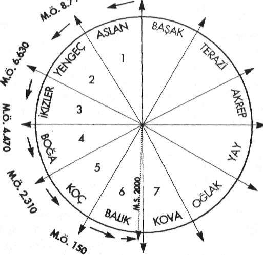
Saklı Kütüphane
www.e-kitap.us
"ANTİK MISIR SIRLARI"
le şöyle anlatır:
Mısır Kralı Surid İbn-i Salhuk rüyasında dünyanın ekseninden oynadığını, yıldızların o yana bu yana kaçıştığını ve insanların tüm bu olgulara eşlik eden korkunç sesin etkisiyle korku içinde olduklarını görür. Uyanınca bütün ratıiplerini toplar. Onlara gördüğü korkunç rüyayı anlatır. Rahipler astrolojik ve astronomik hesapları da inceleyerek yaklaşmakta olan Tufan'ı haber verir-I ler ve krallığı yok edecek iklim değişikliklerini anlatırlar. Önlerinde birkaç yıllık vakit vardır. Bu süre zarfında kral, danışmanları M.Ö. 10.950-TUFAN-M.S.2012
Ezoterizm'e göre Astrolojik Çağlar Çizelgesi
Saklı Kütüphane
www.e-kitap.us
"ANTİK MISIR MİMARİSİ"
yardımıyla içlerinde kubbeler bulunan piramitler yaptırır. Piramitlere muskalar, esrarlı hazineler, paralar, kıymetli taşlardan yapılmış muhafaza kutuları, çeşitli aletler, çatlamayan tekneler ve bükülebilen ama kırılmayan cam eşya yerleştirilir.
İbn-i Abd-Hükm'ün piramitlerin yapılış nedenleri ile ilgili bu aktardıkları birçok bakımdan önemli bilgiler içermektedir. Bunları maddeler halinde sıralayacak olursak şöyle özetleyebiliriz: 1- Tufan'ın dünya eksenindeki kayma ile bağlantdı olması.
2- Bu yaklaşan büyük doğal afetin hem rüya kanalıyla hem de rahiplerin astrolojik ve astronomik he-saplamalanyla önceden anlaşıhnası. Halta zamanının belirlenmiş olması.
3- P i r a m i d i n yapılış nedenlerinin başında Tufan'ın yaklaşmakla olması.
Görüldüğü gibi bu tarihi kayıtta da piramitlerin yapılış tarihi olarak Tufan öncesi gösterilmektedir Bu anlatılanlara baktığımızda piramitlerin yapılış nedeni olarak, Tufan'dan korunma amacı da güdüldüğü anlaşılmaktadır. Çünkü pekçok değerli eşya bu yapıların içlerine muhafaza edilmişti.
Piramitlerin Tufan'dan korunmak için yapıldığı ile ilgili başka tarihi kayıtlar da vardır:
İbn-1 Batuta
14. Yüzyıl'ın ünlü Arap alimi İbn-i Batuta: "Piramitlerin Tufan boyunca sanat ve bilimi ve diğer bilginleri korumak için inşa edildiğini" yazar. Aynı anlatıma yine 14. Yüzyıl'a ait Saklı Kütüphane
www.e-kitap.us
"ANTİK MISIR SİRLARİ"
Firazabadi Lügati'nda da rastlanır.
: • » ;
ünlü Tarihçi Heredot
Yunanlı Tarihçi Heredot da ilk üç piramidin ve Sfenks'in Tufan Oncesi'nde yapıldığını doğrulamaktadır. Mısırlı rahipler Heredot'a, bu piramitlerin Tufan'dan önce Mısır'ı yöneten firavun Surid döneminde, Hermes (Thot) rahiplerinin "Kutsal Sırlar"nı daha sonraki nesillere ulaştırmak amacıyla inşa ettiklerini ve aradan 341 nesil geçtiğini söylemişlerdir.
Mısır Kıpti Tarihçisi Mesudi
Orta Çağ'da yaşamış Mısır Kıpti tarihçisi Mesudi de, Arap Tarihçisi İbn-i Abd-Hükm'ün aktardıklarını doğrularcasına Büyük Piramid'in Surid isimli bir kral tarafından yaptırıldığını aktarmıştır. Bu kayıtlara göre Surid, Tufan'dan 300 yıl önce yaşamıştır.
Nasıl olduğu bilinmeyen bir biçimde kral, Aslan Takıın-yıldızı'yla ilgili bir felâket hakkında önceden uyarılır. Piramidi yaptırma nedeni de buna dayanın Yaklaşan büyük felâketten eskinin anısını koruyabilecek bir anıt yapmak... İşte bu dü
şünceyle Büyük Piramidi inşa ettirir.
Piramidin dış cephesi, duvar ve tavanları astronomi, matematik ve tıp alanında bilgilerle donatılır. Bu bilgilerin arasında gizemli varlıklarla ilgili bilgilerin de kaydedildiği ifade edilmektedir. Eskinin anısı ile ilgili tarihi bilgiler de, bu piramidin gizli bölümlerine yerleştirilir. (Edgar Cayce'nin Atiantis-le ilgili gelecekte bulunacağını iddia ettiği önemli bilgiler işte bunlardır.) Ancak ne yazık ki. Piramidin dış cephesi ve duvarlarındaki bu yazıtların büyük bir bölümü günümüze kadar gelememiş ve gizli tarihe ilişkin bilgiler de şu ana kadar bulunamamıştır.
Saklı Kütüphane
www.e-kitap.us
"ANTİK MISIR MİMARİSİ"
Bu kayıtları doğrulayan başka tarihi belgeler de vardır.
Örneğin Herodot kendi devrinde piramitlerin üzerinde bazı yazmalara rastladığını kaydetmiştir.
12. Yüzyıl tarihçilerinden Abd-Ül-Latif, piramitlerin dı
şındaki yazıtların 10.000 sayfa dolduracak kadar çok oldu
ğundan söz eder.
Bunun haricinde o dönemden kalan bir papirüste yazılanlar da, tüm bu tarihi kayıtları destekler niteliktedir. Abu Hor-menies mabedinde bulunan Kıpti Papirüsü'nde şöyle bir pasaj vardır:
"Piramitler işte böyle yapıldı. Duvarlara astronomi, fizik ve diğer yararlı bilgilerin sırlan yazıldı. Dilimizi okuyabilen herkes bunları anlayabilsin diye."
Doğu Ezoterizmi'ndc de Mısır Piramitleriyle ilgili benzer bilgilerle karşılaşmaktayız.
1900'lü yılların ilk çeyreğinde Tibet'e giderek, Himalayaların gizli mabetlerinde inisiye edilen İngiliz Teozofist A.P.
Sinnett, daha sonra burada edindiği sırların bir kısmını Batı dünyasına duyurmuştur.
Himalayalı bir Üstad'ın müridi olduğu bilinen İngiliz Teozofist A.P. Sinnett, 1920 yılında Londra'da yayınladığı
"Okült Öğretinin Derlenmiş Meyvuları" isimli kitabında Büyük Piramit hakkında yukarıda aktardığımız belgelere benzer bilgilere yer vermiştir:
Keşfedilen üç oda haricinde kesinlikle başka odaları da bulunan Büyük Piramit, başlangıçtan beri muhakkak ki, bir inisiyasyon mabedi ya da mekânı
Saklı Kütüphane
www.e-kitap.us
"ANTİK MISIR SIRLARI"
olarak tasarlanmış ve kullanılmış olmasına rağmen, Okült Gizemlerle ilgili olan ve büyük bir önem taşıyan bazı fiziki objelerin korunnasına yönelik bir amaca da hizmet ediyordu. Denildiğine gö -
re bu objeler kayalık zeminin içine gömülmüşj ve Piramit de bunların üzerine inşa edilmiştir. Piramit'in formu ve büyüklüğü, onu deprem felaketle-
rinden ve hatta yeryüzünde periyodik olarak meydana gelen büyük hareketler sırasında sular allına kalmaktan koruyacak .şekilde; düşünülmüşlür.
Piramidin içini keyfetmek için yapılan ilk araştırmalar Büyük Piramit yüzyıllarca kapalı bir kulu olarak kalmış
ve bu devasa yapının içine açılan giriş kapılarına bir türlü ula
şılamamıştı... Bu nedenle piramidi sadece dışarıdan seyretmekle yetinilcbilmişti.
Tarihi kayıtlara göre Piramide girmeye çalışan ilk kişiye M.S 820 yılında rastlıyoruz.
Harun-u Reşid'in oğlu olan Halife Abdullah Al-Mamun, piramidin içinde muazzam hazinelerin saklı olduğunu duydu
ğunda, bu gizemli yapıya girmeyi kafasma koymuştu.
Yanına aldığı dönemin mühendis, mimar ve inşaatçılanyla birlikte, günlerce bir giriş aradı durdu... Bulamayınca da, doğrudan yapının taş kütlesi üzerinde bir delik açmaya karar verdi. Ne var ki, çekiç ve balyozlarla bu işin yapılamayacağını kısa bir süre içinde anladı. Ellerindeki malzemeler piramidin dış yüzeyinde bir delik açmaya müsait değildi...
Mücadeleyi bırakmamaya kararlı olan halife, adamlarına taşlan kızgınlaşana kadar ısıtmaları ve sonra da üzerlerine so-
Saklı Kütüphane
www.e-kitap.us
"ANTİK MISIR MİMARİSİ"
ğuk sirke dökerek çatlatmaları için emir verdi. Çok uzun ve yorucu çalışmalar sonucunda, bu yöntemle ancak 30 metrelik ufak bir tünel açabilmişlerdi. Ancak piramidin duvarları bitecek gibi görünmüyordu!...
Bu yorucu ve verimsiz çabadan tam vazgeçiyordu ki, adamlarından biri, kayalardan birinden kopan küçük bir taş
parçanın aşağıya düşüp çıkarttığı sesi işitti. Demek ki taşın düştüğü yerde bir boşluk vardı, lekrar gayretlendiler, sonunda 1 metre yüksekliğinde 90 cm genişliğinde olan bir geçide vardılar. Burası 26 derecelik bir eğimle önce Piramid'in taş
yapısı içinden, sonra da altındaki kaya zeminin içinden aşağıya doğru inen bir geçitti. Araplar aşağıya doğru eğimli olan bu geçidin ters istikametinde yukarıya doğru zorlukla ilerleyerek, sonunda "Gizli Girif'\ keşfettiler. Daha sonra da aynı tünelden aşağıya doğru inip, piramidin en dibindeki "Yeraltı Odası"nd ulaştılar. Bu odada hiçbir şeye rastlamadılar. Oda boştu!... Odanın en dibinde daracık bir tünel bulunuyordu.
Tünele girdiler ama burası 15 metre ileride kör bir duvarla bitiyordu. "Yeraltı 0Odası"nın zemininde bir de dimdik aşağıya inen bir kuyu bulunmaktaydı. Ancak kuyu 9 metre derinliğe kadar inip burada bitiyordu...
Al-Mamun'un adamları daha sonra geriye döndüler ve
"Geçit"ei düşen taşı buldular. Bu taşın, kırmızı granitten olan bir başka taşın önünü örttüğünü farkettiier. Bu iri granit yukarıya doğru çıkan ikinci bir geçidin önünde tıkaç vazifesi görüyordu. Uzun çabalardan sonra bu tünele girmeyi başardılar Tünelin içinde ilerlemeye başladılar Bir süre sonra yolları yine granitten yapılmış iki tıkaçla kesildi. Granitten yapılma bu tıkaçları aşmak oldukça zor oluyordu...
Günler süren yt)ğun uğraştan sonra granit tıkaçlardan birini bulunduğu yerden sökmeyi başardılar Karşılarına çıkan tünelden ilerleyip basık tavanlı ve yine 26 derecelik bir eğim Saklı Kütüphane
www.e-kitap.us
"ANTİK MISIR SIRLARI"
yapan bir başka "Çıkış Geçidi"ne vardılar.
Dizleri üzerinde süranerek 45 metrelik bir mesafe boyunca kaygan taşların üzerinde ilerleyip yatay bir tünele girdiler. Bu tünelin sonunda ise yine bomboş bir odada kendilerini buldular. Burası her bir kenarı 5.5 metre olan kare biçiminde bir odaydı. Araplar kadınları eğik tavanlı mezarlara gömdükleri için, buraya "Kraliçe Odası" adını verdiler.
Kraliçe Odası ismini verdikleri bu mekân piramidin tepe noktasının tam altında yer almaktaydı. Düzgün döşeme taşlarından yoksun kaba bir zemine sahipti.
Arapların yine elleri boş kalmıştı!... Aradıkları hazine ortalarda görünmüyordu!...
Geriye dönmek için meşalelerini yola doğru uzattıklarında başlarının üzerinde bir boşluğun yer aklığını farkettilcr.
Birbirlerine omuz vererek buraya tırmandılar. Dar ama yüksek tavanlı olan bir odaya çıkmışlardı. Odanın hemen yanında aynen "Çıkış Geçidi"ne benzer bir eğimde yukarıya doğru devam eden bir tünel bulunuyordu. Tünelin tavanı oldukça yüksekti. Diğer tünellerden farklı olan bu geçidin uzunluğu 47 metre, yüksekliği ise 8.5 metreydi. Galerinin sonunda yüksek bir basamaktan geçilerek alçak tavanlı bir "Ön Odaya" oradan da duvarları, tavanı ve tabanı cilalanmış kırmızı granitten yapılmış büyük bir odaya girdiler. Bir önceki odaya
"Kraliçe Odası" adını verdikleri için buraya da "KralOdası"
adını verdiler. Odanın uzunluğu 10 metre, genişliği 5 metre ve yüksekliği de 5.5 metreydi.
Al-Mamun'un ve adamlarının aradıkları paha biçilmez hazinelerdi ama bula bula bu odada hazine yerine iyi cilalanmış, koyu kahverenginde granitten yapılma boş bir "Lahit" buldular!... Daha doğrusu bunu lahit zannettikleri için böyle isimlendirmişlerdi...
Görünüşü gerçekten de bir lahiti andırıyordu ama bu la-
Saklı Kütüphane
www.e-kitap.us
"ANTİK MISIR MİMARİSİ"
hit, ölen birisi için değil, inisiyelerin ölüm ötesi deneyimlerini gerçekleştirirken kullanmaları için yapılmıştı.
Al-Mamun, rüyalarını süsleyen hazinesine kavuşaınanıış-tı ama kararlılığı ve becerikliliği sayesinde Piramide girilmiş
ve geçitleriyle bazı odalarına ulaşılabilmişti.
Görüldüğü gibi piramidin içindeki odalara verilen isimler Araplar'a aittir ve bugün de bu isimler kullanılmaktadır.
Kullanılan isimlerin bu odaların işlevleriyle ilgili hiç bir dayanağı yoktur. Arapkir'in o anki kendi anlayışları çerçevesinde verdikleri isimlerden ibarettir.
450 yıl sonra...
1270 yılı civarında Büyük Piramit büyük depremlere maruz kaldı.
Tutulan tarihi kayıtlardan öğrendiğimiz kadarıyla, Al-Mamun'dan sonra yüzyıllarca Piramide girme teşebbüsünde bulunan herhangi bir kimse çıkmamıştır... Bunun en önemli nedeni. Büyük Piramid'in pek tekin bir yer olmadığına dair bir inancın yayılmış olmasıydı.
Bu yıllarda Abdul Latif isimli Bağdatlı bir bilim adamı Piramide girmeye karar vermiş ancak tam buna teşebbüs edeceği sırada bayılıp kalmıştı. Bu bayılma olayı Büyük Piramit'in üzerindeki tekinsizlik inancının daha da artmasına neden olmuştu. Sonuç olarak 1638 yılına kadar Piramit'in bilinen başka bir ziyaretçisirtin olmadı görülmektedir.
İlk Bilim Âdâmı, 1638'de Piramide Adım Attı...
Bu tarihte İngiliz Astronom ve Metamatikçisi John Gre-
Saklı Kütüphane
www.e-kitap.us
"ANTİK MISIR SIRLARI"
aves, Büyük Piramit'e ilk adım atan bilimadamı oldu. Amacı, Piramidin içinde olabileceğini düşündüğü bir takım astronomik kayıtlara ulaşmaktı.
"Kral Odası"na vardığında o da bir zamanlar Al-Mamun'un adamlarının olduğu gibi, sadece boş bir lahitle karşılaştı. Böylesine devasa bir yapı sadece bu lahidi örrtmek üzere inşa edilmiş olamazdı... Ama görünüşte bundan başka bir açıklama da getirilemiyordu...
Bu çelişki onu bir hayli düşündürmüştü... Aradığını o da bulamamıştı ama araştırması sırasında Piramit'in içinde Al-Mamun'un adamlarının bulamadığı yeni bir bölüm keşfetti.
"Büyük Galeri"nin rampası üzerinde rastladığı bir taş
bloğu kaldırınca, doğrudan Piramit'in derinliklerine inen kuyuya benzeyen dik bir tünel buldu. 90 cm genişliğindeki bu tünelin duvarlarına, basamak gibi kullanılabilecek küçük çıkıntılar yapılmıştı. Bunlara basa basa 18 metre derinliğe kadar indi. Burada tünel küçük bir oda şeklinde genişliyordu. Bugün buraya "Mağara" denilmektedir.
John Greaves Piramit'in boyutlarını da tespit etmeye çalıştı ve bunun bir matematik mucizesi olduğunu ilk o farketti.
Elde ettiği ölçümlerle o devrin ünlü bilim adamı Sir Isaac Newton da yakından ilgilendi ve bu konuda Newton, bu yapının sıradan bir yapı olmadığıyla ilgili bir de tez hazırladı.
Sonraki yıllarda bilim adamlarının Büyük Piramit'e daha fazla ilgi göstermeye başladığını görüyoruz.
Her yapılan araştırma yeni bulguları beraberinde getiriyordu. Böylelikle Piramitle ilgili mevcut bilgilere sürekli yenileri eklenmeye başlanmıştı. Ama bütün bu araştırmalar samanlıkta iğne aramaktan öteye geçemiyordu. Çünkü Piramit sırrını kolay kolay ele verecek gibi görünmüyordu!...
74
Saklı Kütüphane
www.e-kitap.us
"ANTİK MISIR MİMARİSİ"
Piramidin Sırrı Çözülemiyor!...
İngiliz Naıhaniel Davison, "Kral Odası"mn tam üzerinde, odanın büyüklüğünde ancak ayakta durulamayacak kadar basık tavanlı bir mekân keşfetti. Burası "'Kral Odası "mn tavanını oluşturan yekpare bir granit bloğun üst kısmında kalan bir boşluktan ibaretti. Bu yerin tavanınım da gene granit bir blok kaplıyordu. Bu mekâna "Davison'un Odası" denildi.
Napoiyon'un Mısır Seferi sırasında aralarında matematikçilerin de bulunduğu bir grup Fransız bilim adamı, Piramit'in o zamana kadar yapılmış olan en hassas ölçümlerini tespit ettiler. Piramit'in üzerinde durduğu platformu ve köşe taşlarının yerleştirilmesi için zemindeki kayaya oyulmuş yuvaları buldular.
Kral Odası'nın ayrıntıları ortaya çıkıyor...
19. Yüzyı'lın başında Kaptan Caviglia, Piramit'in içine yerleşip orada yıllar süren uzun araştırmalar yaptı. Kaptan Caviglia daha önce John Greaves'in bulduğu "Kuyu"nun 18
metreden de daha aşağılara doğru devam edip "İniş Geçidi"y\e birleştiğini tespit etti. 1836 yılında kendisine katılan Albay Howard-Vyse ile birlikte "Davimon'ım Odası"nm üzerinde üç benzer mekân daha buldu. Bunlar, "Kral 0da-
A7"nın üzerine kat kat yerleştirilmiş olan granit boşlukların aralarında kalan mekânlardı. En üstteki boşluğun tavanı iri kireç taşı bloğuyla eğimli bir şekilde kapatılmıştı.
Albay Howard-Vyse, bu üst üste bindirilmiş granitlerle elde edilen boşlukların, "Kral 0dası"\\\ üzerinde duran 60
metrelik taş yığınının basıncından korumak amacıyla inşa edilmiş olabileceğini ileri sürdü. Albay Howard-Vyse ayrıca
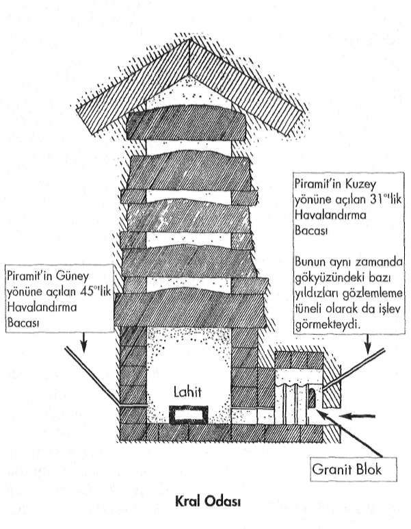
Saklı Kütüphane
www.e-kitap.us
"ANTİK MISIR SIRLARI"
Giriş
Saklı Kütüphane
www.e-kitap.us
"ANTİK MISIR MİMARİSİ"
Piramit'i belirli bir eğimle dıştan içe kat ederek "Kral Odası"nii açılan iki adet "Hava Kanalı"nı ortaya çıkarttı. Bu kanalları temizleyince, oda sürekli olarak temiz hava almaya başladı ve 20"'lik sabit bir ısıda kaldığmı gördü. Bu kanallardan Piramit'in Kuzey yüzüne açılanı 31"'lik. Güney'deki ise 45"'lik bir eğimle uzanıyordu.
"Kraliçe Odası"ndan da havalandırma kanalları uzanmaktadır. Bunlarm tıkalı olan bölümlerini 1872 yılında Mühendis Waynman Dixon açmıştır.
Uzaylılar değil ama bizim uygarlığımız da değil...
20. Yüzyıl'da en sansasyonel bulguları, dünyaca ünlü araştırmacı yazar Eric Von Daniken yayınladığı "Tanrdar'ın Arabaları" isimli kitabıyla duyurmuş ve Büyük Piramit'in normal yollarla inşa edilebilecek bir yapı olamayacağını olsa olsa bunun uzaylılarca yapılmış olabileceğini ileri sürmüştü.
Günümüzde Keops'un uzaylılar değil ama bizim devremize ait uygarlıkların teknolojisiyle de yapılmadığı artık kesin olarak biliniyor. Ancak bu gizemli piramitle ilgili her sorunun cevaplanabildiği sanılmasın. Ortada hâlâ cevap bekleyen pek-
çok soru varlığını korumaktadır. Özellikle de konuya hâlâ klâsik yöntemlerle yaklaşan arkeolog ve tarihçilerin zihinleri cc-vaplayamadıkları sorularla doludur. i
Ayrıca şunu da unutmamak gerekir ki, günümüzde Büyük Piramit'in girilemeyen daha pekçok bölümü vardır. Modern bilgisayarlar ve robotlarla sürdürülen bu çahşmalar halen devam etmektetir. Ve aradan geçen bunca zamana kadar şunu kesin olarak söyleyebiliriz ki, piramit sırrını henüz tam anlamıyla bizlere sunmamıştır. Klasik Tarih Bilimcileri'nin zihninde bu yapıyı inşa eden teknoloji hâlâ büyük bir muammadır.
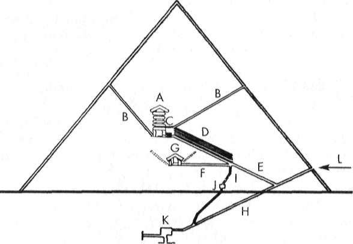
Saklı Kütüphane
www.e-kitap.us
"ANTİK MISIR SIRLARI"
A-- Kral Odası
G-- Kraliçe Odası
B-- Hava Kanalları
H-- İniş Geçidi
C - On Oda
I- Kuyu
D - Büyük Galeri
J -- Mağara
E-- Çıkış Geçidi
K - Yeraltı Odası
F-- Yatay Tünel
L-- Piramide Giriş
Büyük Piramid'in Tespif Edilebilen İç Kesiti
Saklı Kütüphane
www.e-kitap.us
"ANTİK MISIR MİMARİSİ"
P İ R A M İ T L E R İ Y A P A N T E K N O L O J İ
Gelelim piramitlerin yapım tekniklerine... Tonlarca ağır-hğındaki taş blokların o devirde hangi teknik kullanılarak metrelerce yukarıya taşındığı ve böylesine üst üste yığılabildi-
ği günümüzde hâlen tartışmalı olan konular arasındadır. Buna mantıklı bir açıklama henüz getirilebilmiş değildir. Çünkü o devirde yaşayan insanların her türlü teknolojik imkândan yoksun ilkel kabileler oldukları varsayımı ve ön kabulü, bu konunun mantıklı açıklamalarla aydınlatabilme imkânını ortadan kaldırmaktadır.
Ancak konuya Klasik Tarih Bilimcileri'nin dışında yaklaşan araştırmacıların sayısı hiç de az değildir.
Teozofist A.P. Sinnett'in açıklamalarıyla başlayalım: Büyük Piramit'in yapımında kullanılan devasa taş blokların kullanımı ancak ve ancak, daha sonraları insanlığın yitirdiği belirli Doğa Bilgisi'nin bu işte kullanılmış olmasıyla açıklanabilir. Do-
ğa'nın gizemiyle ilgili bu bilgilerin sahipleri, ağır cisimlerin mevcut ağırlıklarını istedikleri gibi değiştirebilecek şekilde maddenin çekimini kontrol edebilmekteydiler. Dev yapılar mimarisinin harikaları ancak işte böyle açıklanabilir... Piramitlerin yapımını yönetenler kullanılan taşları kısmen levite etmek suretiyle bu işlemi kolaylaştırmışlardır. Bunun için majik asalarını kullanmış olabilirler. Bilgelere eski çağlarda doğanın kudretini açığa çıkartan anahtarlar teslim edilirdi. Gizli sihiri sözcükler ve sihirli asalar...
Manyetik alan yayan bir çeşit motor... Dalga boyları ve dev granit blokların levitasyonu... Bu teori bilimkurgu sayfalarından çıkmış fikirler gibi gelmektedir. Peki ama bu teoride bir gerçeklik olamaz mı?
Saklı Kütüphane
www.e-kitap.us
"ANTİK MISIR SIRLARI"
Eldeki bazı eski tarihi kayıtlar da, yukarıda dile getirilen sıra dışı iddialara benzer bilgiler vermektedir. Örneğin iinlii Tarihçi Herodot'un o dönemle ilgili anlattıkları, Teozofist A.P.
Sinnctt'in ileri sürdüğü teorinin, yabana atılamayacağını göstermektedir. Herodot da, Mısır'da ağır bir kayanın, üzerine konulan bir papirüs sayesinde levite edilerek taşındığına kendisinin bizzat şahit olduğunu tuttuğu tarihi kayıtlarına geçirmiştir.
Arap Tarihçilerinden Abu Zeyd el Balkhy'nin anlattıkları da Herodot'un kayıtlarıyla büyük bir paralellik gösterir; Büyük taş blokları yerlerinden kaldırmak ve taşımak için, bunların üstüne üzerinde bazı formüller yazılı olan papirüsler konurdu. Sonra bir avuç büyüklüğünde ve iç içe giren halklardan olu
şan bir alet taşın üzerine tutulur, halkalar çevrilirdi. Bunun üze-nne, taş blok ağır ağır yerinden kalkar ve istenen yere götürüle-bilirdi.
Ünlü Araştırmacı Murry Hope da Arap Kaynaklan'ndaki bu konuyla ilgili ilginç ifadelere dikkat çekmiştir: Dev taş bloklar bir çeşit papirüse sarmalanıp bir rahip tarafından bir asayla dokunulduktan sonra ağırlığını tamamen yitirmekte ve kolayca hareket ettirilerek tam istenilen noktaya yerleştirilmekteydi. (18) Ezoterizmle ilgili konularda dünyanın önde gelen araştırmacılarından olan Bn. Annie Besant da, piramitlerin yapımında kullanılan taşların levite edilerek taşındığını söylemektedir.
Saklı Kütüphane
www.e-kitap.us
"ANTİK MISIR MİMARİSİ"
Mısır'daki taşlar, ne sırf kas gücüyle ne de modern teknolojiyi aşan hünerli cihazlar kullanılmak suretiyle dikilmiştir. Bu taşlar, dünyasal mıknatisiyetin güçlerini kontrol edebilen kişilerce dikilmiştir. Neticede taşlar ağırlığını kaybediyor ve tek bir parmağın temasıyla yönetilmek suretiyle havada süzülerek, belirlenen yerlerine oturtuluyorlardı.
Gerek bazı araştırmacıların dilegetirdikleri, gerekse de bazı tarihi kayıtlarda aktarılan bu sıradışı anlatımlara, eski çağlara ait efsanelerde de rastlanmaktadır. Bu efsanelerde büyülü asalardan sözedilmekte ve bu asalar vasıtasıyla bazı bilgelerin olağanüstü mucizeler gerçekleştirebildiği anlatılmaktadır.
M U C İ Z E V İ TAŞLAR V E ASALAR
Musa Peygamber'in Sihirli Asası
Bu ifadelere sadece efsanelerde değil, kutsal kitaplarda da rastlamaktayız. Buna en güzel örneklerden biri Musa Peygamber'in asasıyla gerçekleştirdiği mucizevi olaylardır. Bu olaylar Kur'an-ı Kerim'in çeşitli Süreleri'ndeki ayetlerde ayrıntılarıyla dile getirilmiştir.
Mısır'da bir Osiris Rahibi olarak eğitilen Musa Peygamber'in bu asayı da, yine Mısır'daki mabetlerden edindiği tahmin edilmektedir.
Kur'an-ı Kerim'de konunun başlangıcı, Firavun'un Musa Peygamber'e söylediği şu sözlerle başlar:
Firavun Musa'ya: "Biz seni çocukken yanımıza alıp büyütmedik mi? Sonunda yapacağını da yaptın. Sen nankör birisin" dedi.
Saklı Kütüphane
www.e-kitap.us
"ANTİK MISIR SIRLARI"
Firavun: "Alemler'in Rabbin de nedir?" dedi. Musa: Kesin olarak inanacaksınız, bilin ki O göklerin, yerin ve ikisinin arasında bulunanların Rabbidir" dedi. Yanında bulunanlara: "İşitmiyor musunuz?" dedi. O sizin de Rabbiniz, önce geçmiş atalarınızın da Rabbidir" dedi, Firavun çevresindekilere: "Size gönderilen peygamberiniz şüphesiz delidir" dedi. Musa: "Eğer akledebilen kim-selerseniz bilin ki O, Doğu'nun, Batı'nın ve ikisinin arasında bulunanların Rabbidir" dedi. Firavun: "Benden başkasını Tanrı edinirsen, and olsun ki seni zindanlık ederim" dedi. Musa: "Sana apaçık bir şey getirmiş isem de mi?" dedi. Firavun: "Doğru sözlülerden isen haydi getir" dedi. Bunun üzerine Musa değneğini attı, besbelli bir yılan oluverdi.
(Şuarâ Suresi: 26/18,19,23-32)
Surenin devam eden ayetlerinde Firavun'un bu olaydan etkilendiği anlaşılıyor Bunun üzerine Firavun çevresindeki ileri gelenlere, ülkedeki tüm sihirle uğraşan bilgilenlerin en önde gelenlerinin toplanıp getirilmesi için emir verir Bundan sonrasını yine Sure'nin devam eden ayetlerinden takip edelim:
Sihirbazlar belirli bir günün bildirilen vaktinde toplandılar. "Sihirbazlar üstün gelirlerse biz de onlara uyarız" dediler. Sihirbazlar geldiklerinde, Firavun'a "Biz üstün gelirsek, şüphesiz bize bir ücret vardır değil mi?" dediler. Firavun: "Evet, o takdirde siz gözde kimselerden olacaksınız" dedi.
Musa onlara: "Ne alacaksanız atın" dedi. Onlar da iplerini ve değneklerini attılar ve: "Firavun hakkı için, şüphesiz, biz üstün geleceğiz" dediler. Bunun üzerine Musa değneğini attı; onların uydurduklarını yutmaya başlayıverdi.
(Şuarâ Suresi: 26/38-45)
Saklı Kütüphane
www.e-kitap.us
"ANTİK MISIR MİMARİSİ"
Mısır'da o dönemler majik uygulamaların son derece yaygın olduğunu hatırlatmakta yarar görüyorum... Ayetlerde sihirle uğraşan alimlerden kastedilen Mısırlı majisyenlerdir...
Surenin devamında Musa'nın majik güçleriyle başede-meyen majisyenlerin (sihirbazlann) yenilgiyi kabul ettiklerini ancak Firavun'un buna çok kızdığını görüyoruz. Firavun'un yanından ayrılan Musa Peygamber çevresindekilerle birlikte Mısır'dan ayrılarak Kızıldeniz'e doğru yola çıkar. Firavun da adamlarını yanına alarak onları yakalamak için peşlerine dü
şer:
Firavun ve adamları güneş üzerlerine doğarken onların ardına düştüler, iki topluluk birbirini gördüğünde, Musa'nın adamları:
"işte yakalandık" dediler. Musa: "Hayır, Rabbim benimle beraberdir, bana elbette yol gösterecektir" dedi. Bunun üzerine Biz Musa'ya "Değneğinle denize vur" diye vahyettik. Hemen deniz deniz ikiye ayrildi, her parçasi yüce bir dağ gibiydi. İşte oraya geridekileri de yaklaştırdık. Musa ve beraberinde bulu-nanlann lıepsini kurtardık. Öbürlerini suda boğduk. Bunda şüphesiz ders vardır ama çoğu inanmamıştır.
(Şuarâ Suresi: 26/60-67)
Şuara Suresi'nden aktardığımız bu ayetlerin hemen hemen aynıları Araf Suresi'nin 103-139 Ayetleri'nde de bulunmaktadır. Aynı konunun hemen hemen aynı cümlelerle uzun uzun ayetlerle iki defa tekrar edilmiş olması da, üstünde ayrıca düşünülmesi gereken bir durumdur.
Musa Peygamber'in asasıyla gerçekleştirdiği bir diğer mucizevi olay da, yine Kur'an-ı Kerim'in Bakara Suresi'nin 60. Ayeti'nin başlangıcında şöyle ifade edilmiştir: Saklı Kütüphane
www.e-kitap.us
"ANTİK MISIR SIRLARI"
"Musa milleti için su aramıştı, "Asanla taşa vur" dedik; ondan oniki pınar fışkırdı herkes içeceği yeri bildi."(19) Bu anlatılanlardan yola çıkan bazı araştırmacılar, bu asaların belirli bir dalgaboyu üreten araçlar olabileceğini ileri sürmüşlerdir.
Bu iddia ilk kez 1947 yılında Walter Owen tarafından dile getirilmişti. Owen'a göre bu sihirli çubuklarla belirli bir dalgaboyunda önceden belirlenmiş bir vibrasyonel ses tonu oluşturulabiliyordu. Sesin ezoterik kullanımı hakkında ise şunları söylüyordu:
Ses, herkesin diişünemeyeceği türden imkânlar taşı yan bir güçtür. Ve buı gücün kullanımı, eski dönem ermişlerinin bildikleri, fakat günümüzün emekleyen biliminin yitirdiği veya karşısına geçip dudak büktüğü çok eskiye ait bir bilimdir. Evrenin çerçevesi ve dokusu ses güeü sayesinden ayakla durmakladır.
Ve yine ses gücü sayesinde çözülerek yok olabilir...
Mısırlı rahipler bu bilime sahiptiler. Maht-Heru denilen Güç Sözcükleri (büyük enerjileri bünyelerinde barındıran özel sözcük ya da sözcük kalıpları) Insiyelere ölüler aleminin kapısını açıyordu. "Kral Odası"na açılan "On Odada yer alan ve temelin oturması sonucunda günümüzde sıkışıp kalmış ve
artık hareket edemez bir hale gelen Granit Blok (20) vardır. Bir zamanlar bu granit blok Başrahibin söylediği sözler sayesinde kaldırılıyor veya indiriliyordu. .. Bloğun adayı un ufak etmemesini sadece anahtar sözcüklerin gücü önlüyordu...
Eski Babil dönemine ait kayıtlarda sesin taş blokları kaldırmak için kullanıldığnıa ilişkin ifadelere Saklı Kütüphane
www.e-kitap.us
"ANTİK MISIR MİMARİSİ"
rastlanır. Prof. Francois, "Kaide Büyücülüğü" isimli eserinde bu konuya değinerek; "Şurası muhakkak ki, eski çağlarda rahipler majik asalar vasıtasıyla fırtınalar çıkartıyor ve bin kişinin kaldıramayacağı taşları mabet inşa etmek amacıyla havalandırabiliyorlardı" demektedir..
Sonik tekniklerin kullanılmış olabileceği bugün bilim adamları arasında ciddi bir şekilde tartışılmaktadır.
Piramidolog William Kingsland Mısır mabetlerinin yapımı hakkında daha ilginç açıklamalarda bulunmuştur: Piramitler inşa edilirken, dev taş blokların taş
ocaklarından getirilnıtîsi sırasında uzun mesafeler aşılılıyordu. Taşlar uygun sembollerin yazılı olduğu papirüslerin üzerine: yerleştirilir, arkasından taşlara bir asa ile vurulurdu. Bunun üzerintî taş bloklar bir ok atımlık mesafe boyunca havada hareket etmeye; başlarlardı. Bu şekilde taşınan taşlar, en sonunda piramile;rin inşa edildiği yere kadar götürülürlerdi.
Ünlü fizikçi Albert Einstein da bu konuya ilişkin bir gözlemini şöyle açıklamıştır: Bizim bilemediğimiz bazı sırlara eskilerin sahip olduklarını kabul etmek zorundayız. 600 Tonluk bazı taş blokların üst yüzeylerinin dışa doğru kubbeleş-miş olması dikkati çekiyor. Bu ancak muazzam bir
çekim veya emme kuvveti ile meydana çıkabilecek
bir fenomendir.
Saklı Kütüphane
www.e-kitap.us
"ANTİK MISIR SIRLARI"
Buraya kadar aktardığmız çeşitli kayıdardan da rahatlıkla anlaşılabileceği gibi, piramitlerin yapılışında bilinen metotların dışında farklı bir yöntem izlenmiştir. Bu kayıtlardan anladığımız bir diğer gerçek de, bu yöntemin Tufan Öncesi Kültüre ait olduğudur.
Ezoterik Bilgiler'e göre, konuyu toparlamaya çalışalım...
Unutulan Gizli Bilgiler...
Konuyu anlaşılır hâle getirebilmek için tarihin çok daha eski dönemlerine doğru uzanmamız gerekmektedir.
Konuyu açalım:
Atlantis'teki bazı merkezlerde bulunan kristaller, kozmik enerjileri toplama ve dağıtım işlemlerinde etkin bir şekilde kullanılıyordu. Dev bir yansıtıcı gibi işlev gören bu merkezlerde büyük enerjiler odaklandırılıyor ve yansıtılıyordu.
Dev yansıtıcılarda kullanılan bu kristallere, Edgar Cayce, medyonısal yollarla aldığı bilgilerde "Ateş Taşı" ismini vermiştir.
Atlantis'teki bu enerji merkezleri, ilk başta "göksel -
ruhsal irtibat" için kullanılmaktaydı. Bu "Enerji. Merkezleri" nde aynı zamanda psişik olarak insanlar yenilenmekte ve fiziksel olarak da bedenlerini rejenere edebilmekteydiler.
Böylelikle yaşlanmanın da etkisini en aza indirebilmekteydiler.
"Kristal Enerji Merkezleri" olarak isimlendirilen ancak niteliği tam olarak bilinmeyen bu ünitelerden, Atlantisliler daha sonraları enerji yayan bir kaynak yaptılar ve bunu geliştirerek ulaşım, iletişim ve yaşamın çeşitli alanlarında bu üniteleri kullandılar. Hatta doğa olaylarına bile, bu enerjilerle müdahalede bulunabilmekteydiler. Atlantis'te bu kristallere Saklı Kütüphane
www.e-kitap.us
"ANTİK MISIR MIAAARISI"
"Tuaoi Taşı?" ismi verilmekteydi.
Ezoterik kaynaklarda "Kristal Enerji Merkezleri" ve
"Ateş Taşı" olarak geçen bu yerlerde kullanılan maddenin tam olarak özelliği bilinmiyor. Gerçekten bir kristal midir yoksa günümüzde bilinmeyen başka bir maddesel yapı mıdır?... Buna net bir cevap halen getirilememiştir.
Edgar Cayce'nin medyomsal irtibat teknikleriyle elde ettiği dokümanlar arasında bu konuyla ilgili oldukça ayrıntılı bilgiler vardır. Bir fikir vermesi için hiç değilse birkaç tanesini sıralayalım: Doğa güçlerinin, böyle ışınları ve etkinlikleri bir merkezde toplayan kristaller içinde biriktirilmesiy-le, gemileri yalnız deniz üslünde değil, havada da sevk ve idare etmeye başladılar. Ayrıca insan sesinin ve vücüdunun bir yerden bir yere naklini sağladılar.
Ateş Taşı" bugünkü deyişye (1943) amyantı andıran bir maddeyle yalıtılmış olan bir binanın merkezin-deydi. Binanın taşın yukarısında kalan kısmı oval biçimindeydi.
Belli açılarda kendi ekseni üzerinde hareket edebilen bu kubbe hem doğa enerjisini hem de kozmik enerjileri "Ateş Taşı"na aktarmaktaydı.
Sonsuz enerjinin konsantrasyonu için hareket edebilen bir kubbeydi. Bu kubbe uzayda sevk edilen gemilere direkt enerji uygulamasında araya hiçbir engel girmemesi yani gemilerin hep görüş alanı için-
Saklı Kütüphane
www.e-kitap.us
"ANTİK MISIR SIRLARI"
de kalması için. raylar üzerinde yer değiştirebilecek tarzda inşa edilmiş bir kubbeydi. Taşıtların sevki, bugün radyo titreşimleri sayesinde uygulanan uzaktan kumanda yöntemini andıran indükleme yönte-miyle yapılıyordu. Yani taşıtlar, enerji istasyonunun merkezine yerleştirilmiş bir taşın ışınlarının ge -
niye konsantre edilmesi yoluyla sevk edilmekteydi-1er. Taşın hazırlanması devrin inisiyelerine düşerdi."
Taş ışınlarının uygulanmasıyla yanan bir tür ateş
sayesinde insanların vücutları şifa buluyor, hatta mucizevi bir gençleşme meydana geliyordu. Boylece beden sık sık gençleşiyordu. Psişik güçler üzerinde de bu enerjilerin büyük bir etkisi vardı.
Doğa enerjilerine de etki edebilmektetdiler demiştik. Edgar Cayce'nin aktardıklarından arada bazı hataların da yapılmış olduğunu anlıyoruz.
Bunlar kazara, yani yanlışlıkla çok yüksek frekans-lara ayarlanınca, ikinci deprem döneminin başlamasına yol açtı.
Atlantis'in son döneminde ellerindeki bu imkanları negatif alanda kullananların çıktığı ve böylelikle doğanın dengesinin bozulduğu birçok ezoterik kaynak tarafından dile getirilmiştir. (21) Bu imkanları negatif alanda kullananları ezoterik kaynaklar "Belial'in Oğullan" olarak nitelerler. Edgar Cayce ise bunlara "Şeytan " anlamına gelen "Satan Oğullan " ismini vermiştir: RR
Saklı Kütüphane
www.e-kitap.us
"ANTİK MISIR MİMARİSİ"
Bu meırkezleıin " S a t a n O ğ u l l a n " tarafından kullanılması volkanik püskürme ve depremlere yol açtı. 'Satan Oğulları' sözkonuısu enerjileri yıkıcı güçlerer dönüştürmüşlerdi. Böylece yeraltın-
da, yerin derinliklerinde büyük patlamalara yol
açtılar. Doğanın güçlü enerji deposundan gelen
büyük volkanik patlamalar ve depremler sonucu
kıta önce beş adaya bölündü.
Edgar Cayce bir zamanlar AtJantis'te kullanılan bu enerji merkezleriyle ilgili bilgilerin halihazırda üç yerde bulundu
ğunu ve gelecekte bunların ortaya çıkacağını ileri sürmektedir.
Ateş Taşı'nın yapımına ilişkin dokümanlar hali
hazırda üç yerde m e v c u t t u r
1- Atlantis'in Poseidia bölgesinin günümüzde su
üstünde kalmış bulunan Bimini Adası yakınında.
2- Mısır'da
3- Meksika'da
Antik Mısır Uygarhğı'nda karşımıza çıkan bu konunun bir benzeri de, daha önceki yayınlarımızı takip eden okurlarımızın hatırlayacağı gibi, Orta Asya Eski Türk Yaşamı'nın içinde de yer almaktaydı...
Türkler'deki "Yada Taşı"nın Sihirli Gücü Çok eski devirlerden kalan yaygın bir inanca göre:
"Türkler 'in atalarma göklerden gelen sihirli bir taş armağan edilmiştir. Bu taş her devirde Türk Samanları 'nın ve büyük Türk komutanlarının ellerinde bulunmuştur." (22) Ve yine bu Saklı Kütüphane
www.e-kitap.us
"ANTİK MISIR SIRLARI"
inanca göre günümüzde hâlâ bu taşın önde gelen Şamanlar'ın ellerinde bulundukları iddia edilmektedir.
Bu anlatılanların sadece bir inançtan ya da söylentiden ibaret olmadığını binlerce yıl öncesine ait eski Çin Tarihi Kayıdan da teyid etmektedir.
Bundan önceki kitabım olan "TÜRKLERİN KÜLTÜR KÖKENLERİ"nde de ayrıntılarıyla dile getirmiş olduğum gibi, Eski Türkler'in de elinde bu tür bir taşın (Yada Taşı) bulundu
ğuna dair çok sayıda tarihi kayıt vardır. Çin Kaynakları tarafından tutulan bu kayıtlarda, Türkler'in bu taş vasıtasıyla istedikleri zaman yağmur veya kar yagdırabildikleri uzun uzun anlatılmaktadır.
Atalarımızın istedikleri zaman yağmur, kar, dolu yağdu-a-bildikleri, rüzgar estirip hatta fırtına çıkaıtabildiklerine dair ilk tarihi belgede şunlar kayıtlıdır:
Türkler'in büyük ataları H u n l a r ' ı n Kuzey'inde bulunan So sülalosinden idi. Oymağın Başbuğu Anan-bu idi. Bunlar yetmiş kardeş idi. Birincisi dişi kurttan türemiş olup adı Içjini-nişibu idi. Içjini-nişibu tabiatüstü özelliklere sahipti. Yağmur yağdırıp fırtına çıkartabilirdi. (23)
Yine aynı Çin Kaynaklan'nda 449 yılında meydana gelen bir savaş anlatılırken konuyla ilgili satırlara rastlıyoruz: Evvelce Kuzey Hunlar'uı idaresinde bulunan Yüce-ban ahalisinde öyle kâhinler vardır ki, Cücenler'in saldırışlarına karşı durduklarında çok şiddetli yağmur yağdırdılar, fırtına çıkarttılar. Cücenler'in onda üçü sellerde boğuldu, soğuktan kırıldı.
Saklı Kütüphane
www.e-kitap.us
"ANTİK MISIR MİMARİSİ"
İslâm Kaynakları'nda Türkler'in bir zamanlar ellerinde bulundurdukları taş; yağmur taşı anlamına gelen "Haccr-ül Matar" ya da "Seng-ı Cede" olarak isimlendirilmiştir. İslam Kaynakları'nda anlatılanlara baktığımızda, Türkler'in bu sihirli taşıyla Müslümanlar'in da yakından ilgilendiklerini görüyoruz.
İslâm tarihçilerinden İbn-ül Fakih'in kayıtlarında. Halife Ma'mun'un bu gizemli taş hakkında araştırma yapması için Nuh b. Esed'i vazifelendirdiği anlatılmaktadır.
Nuh b. Esed Türkler arasında yaptığı incelemeler sonu-nunda Halifeye, söz konusu haberlerin doğru olduğunu fakat olayın nasıl meydana geldiğini anlayamadığını bildirmiştir.
İbn-ül Fakih tarihi kayıdarında, Horasan Emiri İsmail b.
Ahmet'in Ebul Abbas'a anlattıklarına da yer vermiştir: Yirmi bin kişi ile Türklere karşı savaşa çıktım.
Karşımızda baştan ayağa kadar silahlı altmış bin
Türk vardı. Bunlardan bir kısmı bizim tarafa geçti.
Bunlar bize T ü r k l e i n iri dolu yağdıracaklarnı söylediler. Biz de onlara: "Sizin kalbinizden küfür hâlâ çıkıp gitmemiştir, böyle işleri hiç bir insan yapamaz" dedik. Onlar: "Biz haber veriyoruz, sizi ikaz ediyoruz, onların tayin ettikleri vakit yarın sabahtır ama siz daha iyi bilirsiniz" dediler. Sabah oldu. Korkunç bulutlar bizim üzerimizi kapladı. Herkes korktu. Müthiş dolu yağdı.
İbn-ül Fakih, bu olayla ilgili olarak İsmail b. Ahmet'in iki rekât namaz kılarak, bu dolu fırtınasını daha sonra Türkler'in üzerine yönlendirdiğini yazmaktadır. O devirde Arap İslâm Orduları aynı zamanda Allah'ın askerleri olarak nitelendirildiği için, onlar adına böylesine gurur kırıcı bir olayla kar-
Saklı Kütüphane
www.e-kitap.us
"ANTİK MISIR SIRLARI" ;',
şılaşmak kabul edilebilir bir şey değildi. Bu nedenle söz konusu dolu fırtınasını kıldığı namaz sayesinde Türkler'in üzerine yönlendirildiğini yazarak konuyu noktalamasına şaşmamak gerekir.
Biz tekrar sihirli taşımıza geri dönelim...
Eski Türk Mitolojisi'ni oluşturan çeşitli efsanelerde de bu taştan bahsedilir. Hatta bu taşın nasıl kullanıldığı da kısmen açıklanır...
Bir örnek olması bakımından Er Gökçe Destanından konumuzla ilgili bir bölüm aktaralım:
...Yamndaki adamlar susadı. Er Kosay'a susuzluktan şikayet ettiler. Er Kosay, uzun kulaklı sarı atının altından "Cay Taşını çekip ç ı k a r t ı . Salladı, salladı yere koydu. Havadan yağmur yağdı. Yağmur suyunu içliler.
Abdülkadir İnan "Eski Türk Dini Tarihi" adlı kitabında
"El-Lügat'ün Neviyye" isimli eski bir lügatta "Yada Taşı"
hakkında şöyle bir açıklamanın yapılmış olduğunu yazar: Yağmur boncuğu derler bir nesnedir ki, ona kurban kanı sürülmekle yağmur yağar.
Bu gizemli taşla ilgili elimizdeki tüm bilgileri yan yana getirdiğimizde, onun kullanım metotları olarak; taşın su içine konulduğu, suyun üzerine asıldığı, birbirine sürtüldüğü veya taşın sağa sola hareket ettirilerek sallandığını görüyoruz.
Bu konuda günümüze kadar gelen Farsça bir şiir "Yada
Saklı Kütüphane
www.e-kitap.us
"ANTİK MISIR MİMARİSİ"
Taşının kullanılmasıyla ilgili önemli çağrışımları beraberinde getirmektedir. Türkçe çevirisiyle aktarıyorum:
Şekilli bir taştır ki, her ne zaman ona dua edilse gö
ğü yarar ve çokça bulut ve yağmur getirir, bu iş
Türkler arasında yaygındır. (24)
Bu anlatımlardan taşın çalışma prensibiyle, düşünce enerjisinin onu yönlendirmesi arasında çok sıkı bir bağ oldu
ğu anlaşılıyor. Demek ki, düşüncelerle yönlendirilebilen bir maddesel özelliği olan bir taşla karşı karşıya bulunmaktayız.
Bu taşın en son hangi tarihe kadar kullanıldığı tam olarak bilinmiyor ama bu taştan Osmanlılar'in da haberdar olduklarını yine tarihi belgelerden anlıyoruz. , Şaban Şifaî'nin IV. Mehmet'e yazdığı "Risâle-i şifâiyye fi beycini enva-i ahcar" isimli eserinin 14 sayfası bu taşla ilgili önemli anlatımlar içerir.
Özetle aktarıyorum:
Hiç bulut olmadığı halde Yada Taşı ile yapılan iş-lemden iki saat sonra bulutlar gökyüzünde görülmeye başlar ve ardından bereketli yağmurlar yağar.
Ne kadar gerekiyorsa ihtiyaç olunan kadarıyla yağmuru yağdırmak Yadacı'nın hünerine bağlıdır.
Taşlar farklı renklere sahip olabilmektedir. Genellikle siyaha çalan toprak renginde olup üzerinde kırmızı noktalar vardır. Beyaz olup üzerlerinde
kırmızı noktalar olanlara da rastlanmıştır. Büyüklükleri bir kuş yumurtası kadardır.
Saklı Kütüphane
www.e-kitap.us
"ANTİK MISIR SIRLARI"
Kaşgarlı Mahmut'un verdiği bilgilerle, bu anlatımlar büyük bir paralellik gösterir. Kaşgarlı Mahmut söz konusu taşın iki türlü olduğunu ve bazı yörelerde birine "Örünk Kaş di
ğerine ise "Kara Kaş" denildiğinden bahseder. Örünk sözcü
ğünün Doğu Türk Lehçesi'nde ak yani beyaz anlanına geldi
ğini de hatırlattıktan sonra özetimize devam edelim...
Dolu afetinde tarlaları korumak için taş yüksekçe bir yere asılır ve ona dokunulmaz. Onu ancak bu
işin sırrını bil en Yadacılar kullanabilir.
Taşların birbirlerine sürtülmesi ve bir tas suyun i ç i n e taşın atılması ile bu işlemler ııygulanır. Aneak bu işlemleri sırrı bilen kimselerin (Yadacılar'nı) yapması gerekir. Aksi takdirde arzu edilen sonuca ulaşılmaz. Taşı suya atmak yeterli dtiğildir.
Bu anlatımlar da taşın kullanınn ile ilgili yukarıdaki tespitlerimizi doğrular niteliktedir. Ayrıca bu taşın sadece kullanım metodunu bilenlerin elinde işe yaradığını anlatması da önemlidir.
Şimdi bu taşın gerekli metotlara uyulmadan kullanıldığında ne tür sonuçlan beraberinde getireceğini gösteren; 13.
Yüzyıl'da yaşanan ve tarihi kayıtlara geçen bir olayı sizlerle paylaşmak istiyorum: (25)
Velaşgerd önüne g e l i n c e yöredeki halk bize şiddetli sıcak, kuraldık ve hayvanları rahatsız eden sinek-lerden çok şikayet ettiklerini bildirdiler. Bunun üzerine taşlarla yağmur yağdırdmaya k a r a r verildi.
Merasimi bizzat Sultan idare ediyordu.
Saklı Kütüphane
www.e-kitap.us
"ANTİK MISIR MİMARİSİ"
"İlk başta ben buna inanmıyordum. Fakat sonradan bunun birçok tecrübelerle gerçek olduğuna gözlerimle şahit oldum." diyen S.A. Nesevi olayın gelişimini şöyle anlatmaya devam ediyor:
Bu kez de geceli gündüzlü, ardı arkası kesilmeden yağan yağmurdan halk şikayert etmeye başladı. Yağmur sihri yapıldığına halk pişman oldu. O kadar
çok yağmur yağdı ki,her taraf çamur ve bataklığa
döndü. Sultan'ın çadırına bile girilmez oldu. Yağmur dinmek bilmiyordu. SEL ne var yoksa her şeyi mahvetti. Bir ara sütninesinin Sultan'a şunları söylediğini işittim:
"Sen bi r hüdâvent alemsin.... Fakat yağmur yağdırmakta değil... Çünkü böyle bir tufan çıkartmakla hata. ettin... Senin yerinde başka birisi olsaydı bunu yapmazdı, sadece elverecek kadar yağdırırdı"
Bu tür taşların yanlış kullanımının ne tür sonuçlar doğuracağını göstermesi bakımından yukarıdaki tarihi kayıtlar son derece önemlidir.
Kaldı ki, bu taşların Atlantis'te kullanılanların küçük birer örnekleri olduğu düşünülecek olursa, Atlantis'teki bu tür taşlardan oluşan devasa enerji merkezlerinin negatif alandaki kullanımının, nasıl büyük bir doğal afetler zincirine neden olduğu sanırım daha iyi anlaşılacaktır.
Ezoterizm'de Dünden Bugüne Taş Kültü
Çevrelerine belirli tesirler yaydıklarına ve canlı organiz-
Saklı Kütüphane
www.e-kitap.us
"ANTİK MISIR SIRLARI"
malar üzerinde hem psişik hem de fiziksel etkilerde bulunduklarına inanılan taşlara eski uygarlıkların kültürlerinde ve ezoterik çalışmalarda "Tılsımlı Taşlar" ismi verilmiştir.
Ezoterik prensiplere göre bazı taşlar evrendeki ve yerküredeki birtakım güçleri çekme, biriktirme, dönüştürme ve yayma özelliklerine sahiptir. İnisiyatik çalışmalarda bu tür taşların enerjetik özelliklerinden yararlanmak, başlı başına bir araştırma konusuydu. Ve elimizdeki bu konuyla ilgili kayıtlar eskilerin bu konuda hayli ileri düzeyde bilgi sahibi olduklarını göstermektedir.
Ezoterizm'de taşlar dört ana grupta smıflandınlnuş-tır:
1- Atlantisliler'in özel işlemlerden geçirdikten ve biçimlendirdikten sonra enerji santrallerinde kullandıkları nadir kristaller ve çok farklı bir maddesel yapıya sahip olan özel (aşlar.
2- Tufan'dan sonra bizim devremize ait uygarlıkların inisiyatik merkezlerindeki mabetlerde yer alan psişik çalışmalarda kullanılan, kökenleri bilinmeyen ve günümüzde kayıp durumdaki taşlar.
Bu taşlardan bazılarının kozmik kökenli, bazılarının ise Atlantis kökenli olduklarını ve bizim devremizin ortalarına doğru bazılarının yeryüzünün belirli yerlerine gizlenmiş oldukları söylenir.
Kabe'deki Siyah Taş (26) ve İstanbul'a yerleştirildiği söylenilen ancak nerede olduğu bugün için bilinmeyen gizemli taş bu grupta değerlendirilmektedir. (27)
Saklı Kütüphane
www.e-kitap.us
"ANTİK MISIR MİMARİSİ"
3- Günümüzde mevcut olan değerli taşlar ve kristaller.
Bunlar da doğru kullanıldığı takdirde canlılar üzerinde önemli etkilerde bulunduğu yapılan deneysel çalışmalarla ispatlaıı-mış durumdadır Günümüzdeki New Age yaşam kültüründe bu çalışmaların önemli bir yeri vardır (28)
4- Değersiz taşlar Kendiliklerinden özel bir enerjetik yayınlan olmayan, ancak ley hatları üzerine dikildiklerinde belirli bir büyüklükte olmak koşuluyla yerkürenin telürik enerjisiyle ilgili bir etkinlik meydana getirebilen taşlardır.
Puta tapmanın perde arkası:
Daha önceki kitaplarımda da söylemiş olduğum gibi, taşlan yapılmış putlara tapma meselesinin ardında yatan gizli gerçek, yukarıda farklı yönleriyle ele aldığımız "Tılsımlı Taşlar" in çevrelerine yaydıkları etkiyle bağlantılıdır.
Eski devre ait insanlar taşlara tapmıyorlardı. Taşların sihirli gücünden yararlanmaya çalışıyorlardı. Bu onları gözleyenlerce yanlış yorumlandığı için onların taşlara taptıkları sonucuna ulaşılmıştır (29) Neyse... Konumuzu fazla dağıtmamak için bu meseleye girmek istemiyorum... Gelelim sihirli asalara...
Tılsımlı Taşlar'dan Sihirli Asalar'a...
Asaların da, yukarıda sözünü ettiğimiz enerji toplama ve dağıtma özelliğine sahip bu özel maddelerden yapılan küçük modeller olduğu tahmin edilmektedir.
Eski uygarlıklara ait kabartma ve resimlerde sıklıkla kar
şımıza çıkan asa, ezoterizmde her şeye uzanan tesir gücünü sembolize etmektedir. Ancak şunu hemen belirtmek gerekir Saklı Kütüphane
www.e-kitap.us
"ANTİK MISIR SIRLARI"
ki, asa sadece bir sembol değil, aynı zamanda kullanılan bir objedir. Kullanıldığı alan ise, manyetik ve psişik enerjilerin bu obje vasıtasıyla bir yerden bir yere yönlendirilmesidir.
Önce Atlantis'te, Tufan Sonrası'nda ise bizim devremize ait uygarlıkların inisiyatik merkezlerinde bu objcleı- sıklıkla kullanılmıştır.
Gizli mabetlerde sürdürülen inisiyasyonlarda, inisiyatörlerin psişik etkinliklerinde kullandıkları, özel işlemlerden ge
çirilmiş taş ve madenlerden yapılma ve giiıuimüzde "tılsımlı" olarak adlandırılan özel değneklerin varlığı bilinmekle birlikte, bu özel değneklerin niteliği hakkında çok az bilgiye sahip bulunulmaktadır Konumuzu kısaca toparlarsak şunları söyleyebiliriz: Eldeki tüm verilerden anlaşıldığı kadarıyla, bu asalar sıradan değnekler olmayıp, birtakım enerjileri çeken, toplayan, dönüştüren ve psişik yeteneklerle ilgili uygulamalarda gücün etkisini misliyle büyüten bir nevi amplifikatör gibi kullanılabilen özel aletlerdi.
Önce Atlantis'te sonra da Mısır'daki inisiyelerin ellerinde gördüğümüz bu sihirli asalar, tarihin sonraki dönemlerinde de eksik olmamış ve bu asaları kullanan pekçok kişi tarih sahnesinde görülmüştür. Hatta bazı Peyggamber'lerin ellerinde de karşımıza çıkmıştır. Ki bunlardan en sonuncusu Musa Peygamber'dir.
Eldeki kayıtlara göre, Thot'un asası, tellerin spiral biçimde bir bobine sarılmasını andıran iki yılanın sarılı olduğu bir değnekti.
Mısır'da inisiye edilen Orfe'nin de bir asaya sahip oldu-
Saklı Kütüphane
www.e-kitap.us
"ANTİK MISIR MİMARİSİ"
ğu ve bu asanın ise kozalak başlı olduğu ifade edilmektedir.
Musa Peygamber'in asasının şekliyle ilgili ayrıntılı bilgi bulunmamaktadır. Ancak bu konuyla ilgili eski bir Yahudi inanışına göre, yeryüzüne melekler tarafından indirilmiş bu objeyi Musa Peygamber'e kimliği meçhul ihtiyar bir bilge hediye etmiştir.
Türkler'in elinde bulunan Yada Taşı'mn da göklerden geldiğine dair Atalanmız'ın çok eski bir inanca sahip olduklarından söz etmiştik. Bu inançla, Yahudi Gelenekleri'ndeki inanç arasında büyük bir paralellik olması meselenin nerelere bağlı olabileceğini göstermesi bakımından son derece düşündürücüdür.
Bu arada Kabe'deki siyah Hacer'ül Esved Taşı'mn da cennetten geldiğine dair inancı burada bir kez daha hatırlatalım...
Sihirli Asalar günümüze kadar gelememi$tir...
Zamanla bu özel yapım asalar ortadan kaybolmuşsa da, asa, kudret ve otorite sembolü olarak eskinin anılarında yaşamaya devam etmiştir... Böylelikle asa kullanılan bir objeden bir sembole dönüşmüştür. Bu şekliyle sadece ezoterik çalışmalarda yerini korumakla kalmamış aynı zamanda krallar, rahipler hatta askeri ve adli otoritelerce de kullanılmaya başlanmıştır. Örneğin eski Yunanistan'da yargıçlar, generaller ve yüksek öğretim görevlileri farklı türdeki asalarıyla dolaşmaktaydılar. Bu dönemlerde bazı inisiyatörlerin ellerinde görülen asalar değerli taş ve madenlerden oluşmuş olmakla birlikte, öncekilerin sahip oldukları özel niteliklerden oldukça uzaktı.
Ve bu nedenle de psişik etkinliklere çok büyük bir katkıları yoktu.
Bu sürecin sonunda inisiyatörlerin ellerindeki asalar, za-
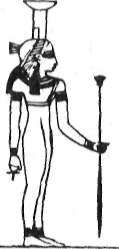
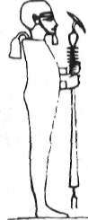
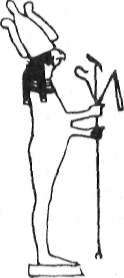
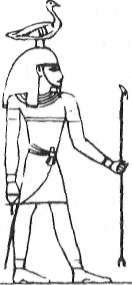
Saklı Kütüphane
www.e-kitap.us
"ANTİK MISIR SIRLARI"
Mısır'da tüm ilâhlar ellerinde asalanyla resmedilmiştir Ellerinde asası olmadan resmedilen bir tek ilah bile yoktur.
'nm-:
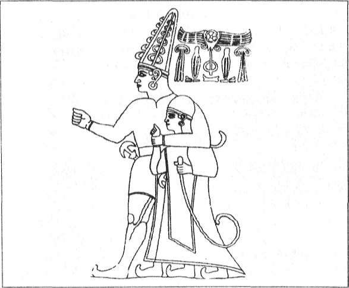
Saklı Kütüphane
www.e-kitap.us
"ANTİK MISIR MİMARİSİ"
manla enerjetik bir işlev görmekten çok, eski asaların anısını yaşatan bir sembole dönüştüler. Böylelikle inisiyötörlerin asaları inisiyatörlügün sembolü hâline geldiler.
Geçmişe ait bu anı, eski uygarlıkların mitolojilerinde ve dinsel öğretilerinde sembolik bir şekilde yaşatılarak, günümüze kadar gelebilmiştir.
Bunlardan birkaçını sıralayalım: ,
Hititler'de ucu spiral biçimli şekilli asa.
Hint'te İki sipralli asa.
Yunan'da iki yılanlı asa. Orfe'nin kozalak başlı asası. Yunan Mitolojisinde ise Zeus'un Kartal başlı asası.
Bir Hitit Tanrısı'nm himayesindeki Hitit Kralı ve elinde tuttuğu spiral uçlu asa.
Saklı Kütüphane
www.e-kitap.us
"ANTİK MISIR SIRLARI"
Mezopotamya'da yıldırımı andıran asa. Mezopotamya Mitolojisi'nde bu asa Sirius'la özdeş kılınan İlâh Nin-urta'nın elinde bulunmaktadır.
Taoizm ve Hinduizm'de yedi düğümlü asa.
Mısır'da ise Köpek başlı, çakal başlı, üç başlı, kamçılı ve kanca uçlu asalar.
Asalarla ilgili kayıtlar en son olarak hem Musevilik'te hem de İslâmiyet'te de yerini alamış ve böylelikle bu hatıra günümüze kadar gelebilmiştir.
Evet... Konu, Musa Peygamber'in asasından açılmış ve daha sonra da Mısır'la ilgili eski kayıtlarda geçen ağır taş
blokların nasıl sıradışı bir şekilde levite edildiğini birlikte in-cemiştik... Sanırım bu açıklamalarımızla, meselenin tamamı olmasa da, hiç değilse belli bir bölümü gün ışığına çıkmaya başlamış bulunuyor.
Biz tekrar Antik Mısır'a geri dönelim...
KEOPS'UN DÜNYA ÜZERİNDEKİ YERİ
Mısır'daki üç büyük piramit ve özelhkle de "Büyük Piramit" olarak anılan Keops, ilk başta devasa boyutlarıyla insanlar üzerinde büyük bir hayranlık uyandırmıştır. Bugün de buraları gezen turistler, bu yapılar karşısında aynı hayranlığı duymaktadır. Ancak bu devasa yapıların insanı hayrete düşüren tarafı sadece boyutları değildir... Keops, Dünya üzerindeki bulunduğu yer itibariyle de garipliklerle doludur... Örneğin Piramidin tara uç noktasından geçen meridyen, kara ve denizleri iki eşit parçaya böler.
Konuyu açalım..
Saklı Kütüphane
www.e-kitap.us
"ANTİK MISIR MİMARİSİ"